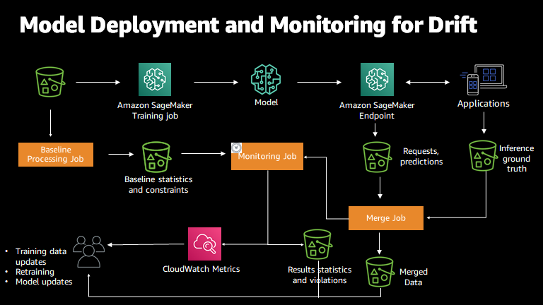

Domain 5: Testing, Validation, and Troubleshooting
What this domain asks you to do
The exam guide lists the tasks and skills below. Each task has its own section in this module. Each skill has its own heading in that section.
Task 5.1: Implement evaluation systems for GenAI.
- Skill 5.1.1. Develop comprehensive assessment frameworks to evaluate the quality and effectiveness of FM outputs beyond traditional ML evaluation approaches (for example, by using metrics for relevance, factual accuracy, consistency, and fluency).
- Skill 5.1.2. Create systematic model evaluation systems to identify optimal configurations (for example, by using Amazon Bedrock Model Evaluations, A/B testing and canary testing of FMs, multi-model evaluation, cost-performance analysis to measure token efficiency, latency-to-quality ratios, and business outcomes).
- Skill 5.1.3. Develop user-centered evaluation mechanisms to continuously improve FM performance based on user experience (for example, by using feedback interfaces, rating systems for model outputs, annotation workflows to assess response quality).
- Skill 5.1.4. Create systematic quality assurance processes to maintain consistent performance standards for FMs (for example, by using continuous evaluation workflows, regression testing for model outputs, automated quality gates for deployments).
- Skill 5.1.5. Develop comprehensive assessment systems to ensure thorough evaluation from multiple perspectives for FM outputs (for example, by using RAG evaluation, automated quality assessment with LLM-as-a-Judge techniques, human feedback collection interfaces).
- Skill 5.1.6. Implement retrieval quality testing to evaluate and optimize information retrieval components for FM augmentation (for example, by using relevance scoring, context matching verification, retrieval latency measurements).
- Skill 5.1.7. Develop agent performance frameworks to ensure that agents perform tasks correctly and efficiently (for example, by using task completion rate measurements, tool usage effectiveness evaluations, Amazon Bedrock Agent evaluations, reasoning quality assessment in multi-step workflows).
- Skill 5.1.8. Create comprehensive reporting systems to communicate performance metrics and insights effectively to stakeholders for FM implementations (for example, by using visualization tools, automated reporting mechanisms, model comparison visualizations).
- Skill 5.1.9. Create deployment validation systems to maintain reliability during FM updates (for example, by using synthetic user workflows, AI-specific output validation for hallucination rates and semantic drift, automated quality checks to ensure response consistency).
Task 5.2: Troubleshoot GenAI applications.
- Skill 5.2.1. Resolve content handling issues to ensure that necessary information is processed completely in FM interactions (for example, by using context window overflow diagnostics, dynamic chunking strategies, prompt design optimization, truncation-related error analysis).
- Skill 5.2.2. Diagnose and resolve FM integration issues to identify and fix API integration problems specific to GenAI services (for example, by using error logging, request validation, response analysis).
- Skill 5.2.3. Troubleshoot prompt engineering problems to improve FM response quality and consistency beyond basic prompt adjustments (for example, by using prompt testing frameworks, version comparison, systematic refinement).
- Skill 5.2.4. Troubleshoot retrieval system issues to identify and resolve problems that affect information retrieval effectiveness for FM augmentation (for example, by using model response relevance analysis, embedding quality diagnostics, drift monitoring, vectorization issue resolution, chunking and preprocessing remediation, vector search performance optimization).
- Skill 5.2.5. Troubleshoot prompt maintenance issues to continuously improve the performance of FM interactions (for example, by using template testing and CloudWatch Logs to diagnose prompt confusion, X-Ray to implement prompt observability pipelines, schema validation to detect format inconsistencies, systematic prompt refinement workflows).
Source: https://docs.aws.amazon.com/aws-certification/latest/ai-professional-01/ai-professional-01-domain5.html
Task 5.1: Implement evaluation systems for GenAI.
After this section, you can read a long scenario about quality, release gates, retrieval, or agent behavior. You can name the object under test, the timing, and the evidence type. You can then choose the feature that fits and reject each wrong option with one reason. The section covers all nine skills in Task 5.1 and each service or technique that those skills name.
fits"] N5 -->|last| N6["Reject each wrong option"]
Figure: The steps run from a long scenario to one chosen feature.
The deciding constraint
Start with the object under test. A model output, a RAG answer, and an agent session each point to a different feature. After that, find the timing and the evidence type. Most wrong options solve a different problem, such as runtime safety, server health, or cost.
Rule: Name the object, the timing, and the evidence type before you name a service. Decide them in that order.
Three words decide most questions in this task. Timing asks whether the test runs before release or on live traffic. Evidence asks whether the truth is a reference answer, a rubric, a human opinion, or a retrieved passage. The object asks whether you score a model, a knowledge base, or an agent that calls tools.
exists| F["Automatic metric job"] C -->|rubric needed| G["Judge model job"] C -->|people must judge| H["Human work team job"] E -->|after release live
traffic| I["AgentCore online
evaluation"] E -->|before release saved
traces| J["On-demand or batch
evaluation"] D -->|search only| K["Retrieve only job"] D -->|answer too| L["Retrieve and generate job"]
Figure: The first split is the object, then the evidence type and the timing.
Use these signal words to move down each branch. A signal word is a phrase in the stem that points to one branch. Underline it before you read the options.
- Reference answer or approved summary points to an automatic job with reference responses.
- Rubric, scale, or explanation of the score points to a judge model job.
- Reviewers, preference, tone, or expert taste points to a human work team job.
- Live sessions or sampling rate points to AgentCore online evaluation.
- Before promotion or release gate points to a golden dataset run in the pipeline.
- Passages, chunks, or search results points to a retrieve-only test.
- Claims grounded in sources points to faithfulness on a retrieve and generate job.
- Input drift or feature baseline points to SageMaker Model Monitor, which watches statistics.
- Block, deny, or mask points to Guardrails, which act at runtime and do not score.
Skills and the features they name
Each skill below names its own services or techniques. Each technique has a short heading. The services are described in full in the next section. Each technique here says what the skill asks you to show and which feature gives that evidence.
show"] N3 -->|then| N4["Name the feature that
gives evidence"] N4 -->|details| N5["Service described in next
section"]
Figure: Each skill leads to one technique and the feature that gives its evidence.
Skill 5.1.1: Assessment frameworks beyond ML metrics
This skill asks for quality checks that go past accuracy on labels. Generated text has many valid answers, so a fixed label check misses most of the quality. The framework names each dimension to score, such as relevance, factual accuracy, consistency, and fluency.
Figure: A fixed label check misses quality that scored dimensions can show.
Relevance
Relevance asks whether the answer addresses the user request. A judge metric with a rubric scores relevance well when no single correct string exists.
Rule: Use a judge metric for relevance. Use a reference-based metric only when one approved answer exists.
Factual accuracy
Factual accuracy asks whether the claims match a trusted source. For a RAG answer, check the claims against the retrieved context with faithfulness. Clarify lists factual knowledge as an automatic dimension that uses built-in or custom datasets.
Trap: A fluent answer can be wrong. A fluency score does not check facts.
Consistency
Consistency asks whether the same input gives similar answers across runs and across prompt versions. Clarify lists consistency as a human rating dimension. Repeat each test input several times and measure the spread. A single judge score does not show the spread, so record the range of answers too.
Fluency
Fluency asks whether the text reads well. Clarify lists fluency as a human rating dimension, so people or a rubric score it. Do not report fluency as the quality score for a summary or a support answer.
Trap: A high fluency score does not show that the claims are true.
Skill 5.1.2: Model evaluation to choose a configuration
This skill asks you to compare candidate configurations on the same test set. A configuration can be a model, a prompt version, or a parameter set. The goal is the best trade of quality, cost, and speed for the business. Compare only what you changed.
Figure: Candidates share one test set so that only the changed setting differs.
Multi-model evaluation
Score every candidate with the same dataset, the same judge, and the same metrics. Each Bedrock judge job has one generator model, so create one job per candidate. Keep every other setting the same. A score from a different judge cannot be compared with this one.
A/B testing
An A/B test sends real traffic to two variants and compares one business or quality metric. Use it after an offline gate passes, because the weaker variant reaches real users. AppConfig switches the active variant, and CloudWatch Evidently runs the experiment.
Trap: An A/B split is not a pre-release test.
Canary testing of FMs
A canary sends a small share of live requests to the candidate model. It finds errors that offline sets miss, but real users see those errors. Shadow testing copies traffic to the new model and does not return its answers to users. Exact traffic weights are Not in source for this review.
Trap: A canary is not the only regression gate. Users see the errors before the team sees the score.
Cost-performance analysis for token efficiency
Token efficiency measures how many tokens each useful answer uses. Count input and output tokens for each candidate, then compare cost with the quality score. Sundog pairs Bedrock Evaluations with token counting to estimate cost against performance. A cheaper model with a lower quality score can still be the wrong choice.
Rule: Compare cost per passing answer, not cost per request.
Latency-to-quality ratio
This ratio compares response time with a quality score for each candidate. No AWS page in this review defines a standard formula, so the formula is Not in source. Define it in the report and name the latency percentile you use. Measure latency with traces, then join it to the scores from the same dataset.
Business outcome measures
Business outcomes include measures such as resolution rate, conversion, or handle time. These need live traffic or business logs. An offline judge score does not prove a business gain. Sundog lists business impact metrics as something to monitor after release.
Trap: A better offline score does not prove a better conversion rate.
Skill 5.1.3: User-centered evaluation and feedback
This skill asks you to learn from real users and from reviewers. Feedback changes the next prompt, model, or dataset. The design needs a way to collect the feedback and a store that supports analysis.
analysis"] N3 -->|feeds| N4["Next prompt model or
dataset"]
Figure: Feedback from users and reviewers reaches the next prompt, model, or dataset.
Feedback interfaces
A feedback interface sends a rating or comment for one response. A common pattern puts API Gateway in front of Lambda, and stores the feedback in DynamoDB with indexing. Store each rating with the response ID and the prompt version.
Rating systems for model outputs
A rating system asks people to score an output. Clarify lists comparative methods, such as Likert comparison, choice buttons, and ordinal rank. It also lists individual methods, such as thumbs up or down and Likert scale. A single-model study must use an individual method.
Annotation workflows for response quality
An annotation workflow sends each output to labelers and collects structured ratings. A Bedrock human job uses a work team from Cognito, Ground Truth, or A2I. Each team supports up to 50 workers. Write a short instruction for each rating method, because workers score by the instructions.
Trap: Ground Truth labeling creates training labels. It does not rate a live answer by itself.
Skill 5.1.4: Quality assurance and deployment gates
This skill asks for a repeatable check before each prompt or model change reaches users. The check must catch a regression that a unit test misses. The pipeline must stop when the score drops below the agreed threshold.
threshold"] N2 -->|below threshold| N3["Pipeline stops"] N2 -->|meets threshold| N4["Change reaches users"] N1 -->|unit test misses| N5["Regression check catches
it"]
Figure: A repeatable check stops the pipeline when a score falls below the agreed threshold.
Continuous evaluation workflows
A continuous workflow runs the evaluation on a schedule or on each change. It stores scores over time, so the team sees a trend and not one number. Sundog recommends synthetic user workflows before and after deployments.
Regression testing for model outputs
A regression test runs a fixed golden dataset against the candidate and the approved version. Each case has an input and an expected result. The team compares the new scores with the last approved run. Unit tests alone often miss generative behavior, because the output changes between runs.
Automated quality gates for deployments
A quality gate is a pipeline stage that fails when a threshold is missed. CodeBuild runs the test stage from a buildspec file, and CodePipeline orders the stages. Step Functions adds retries, a branch for each case, and an approval step.
threshold| C["Stage passes"] B -->|score below
threshold| D["Stage fails and blocks
deploy"] C -->|needs approval| E["Step Functions approval
step"] C -->|no approval needed| F["Deploy to next stage"]
Figure: A release gate compares each score with the agreed threshold before deployment.
Skill 5.1.5: Multi-perspective assessment
This skill asks for several views of the same output. One metric misses a fact error, a retrieval error, and an unsafe tone. Combine automatic checks, a judge, and human review. Name the perspective that each check covers.
covers"] N3 -->|each check| N5 N4 -->|each check| N5
Figure: Several checks give several views of the same output.
RAG evaluation
A RAG evaluation scores the retrieved passages, the final answer, or both. Bedrock has a retrieve-only job type and a retrieve-and-generate job type. The full details sit in the RAG section below.
LLM-as-a-Judge
A judge model reads each prompt and response, then scores it with a rubric. A Bedrock judge job uses two models, one that writes answers and one that scores them. The judge returns a score and an explanation. The judge can share blind spots with the generator, so choose a different model family when you can.
Trap: A judge that shares the generator blind spots gives weak evidence.
Human feedback collection interfaces
A human feedback interface collects ratings from users or reviewers for each model answer. It can be a feedback button in the app or a review queue for staff. Use Bedrock human jobs for offline ratings, and A2I for live review of low-confidence items. Store each rating with the response ID, so the score links back to the prompt.
Skill 5.1.6: Retrieval quality testing
This skill asks you to test the search step on its own. A wrong answer can come from a missing passage. Test the retriever before you change the generator, and record the search result for each query.
Figure: The retriever is tested and recorded before the generator changes.
Relevance scoring
Relevance scoring checks whether each retrieved passage helps answer the query. A retrieve-only RAG job reports retrieval metrics such as relevance and coverage, according to Sundog. The Knowledge Bases Retrieve operation returns the most relevant source chunks as an array, so your own script can score them. A score field in that response is Not in source for this review.
Context matching verification
Context matching checks that the retrieved chunks are the expected ones. Prepare a question list where each question maps to its correct source IDs or reference contexts. Call Retrieve with the same metadata filters that the application uses, so access rules are also tested. Compare the returned sources with the expected sources for each query.
Rule: Verify chunk identifiers against a reference list, not against the final answer.
Retrieval latency measurements
Retrieval latency measures the time for the search call. Time the Retrieve call in your test script, and record it per query and per filter. Trace data shows where time goes across components. CloudWatch shows the trend once the timing is published as a metric.
Trap: An answer quality score does not show retrieval time.
query set| B["Call Retrieve with filters"] B -->|IDs match reference| C["Context matching passes"] B -->|IDs missing| D["Fix chunking or metadata"] B -->|timing over target| E["Measure per filter and
query"] E -->|slow search step| F["Fix index or search
settings"]
Figure: Retrieval tests check the expected passages first, then the timing.
Skill 5.1.7: Agent performance frameworks
This skill asks you to score an agent by task outcome, by tool choice, and by reasoning across steps. An agent can give a good final answer after a wrong tool call. It can also finish a task after a long wrong detour. Score each behavior with its own evaluator.
separately"] N3 -->|own evaluator| N5 N4 -->|own evaluator| N5
Figure: An agent session is scored on outcome, tool choice, and reasoning with separate evaluators.
Task completion rate measurements
Task completion rate is the share of sessions where the user goal was met. Sundog lists goal success rate as a built-in evaluation. Score it at the session level. Report the rate for each workflow type, not only one overall rate.
Tool usage effectiveness evaluations
Tool usage asks if the agent picked the correct tool and sent correct parameters. Sundog lists tool selection and parameter accuracy as built-in checks. Score these at trace or tool-call level. Measure choice and parameters separately, because one can fail while the other passes.
Trap: A correct final answer can hide a wrong tool call.
Amazon Bedrock Agent evaluations
Amazon Bedrock Agents is a separate feature from AgentCore. This review did not confirm an agent evaluation job type on an AWS page, so that job type is Not in source. For agents that run on AgentCore, use AgentCore Evaluations. The detail is in the services section.
Trap:
Reasoning quality assessment in multi-step workflows
Reasoning quality checks whether each step follows from the earlier steps and from the user goal. Score the steps in the trace, not only the last answer. A custom evaluator defines a judge prompt and a scale, and it runs at session, trace, or tool-call level. Sundog lists these three levels for custom evaluators.
Rule: Use a custom evaluator at trace or tool-call level when the failure happens in the middle of a workflow.
Skill 5.1.8: Reporting to stakeholders
This skill asks you to show results so that decision makers can act on them. A report needs the metric, the dataset, the judge, and the threshold. It also needs the change from the last approved run.
makers"] -->|must include| N2["Metric and dataset"] N2 -->|must include| N3["Judge and threshold"] N3 -->|must include| N4["Change from last approved
run"] N4 -->|supports| N5["Decision makers act"]
Figure: A stakeholder report carries the metric, dataset, judge, threshold, and change.
Visualization tools
CloudWatch dashboards show metric trends and alarm states. Sundog lists Amazon Managed Grafana for monitoring, visualization, and alerts on metrics and logs. Sundog also says QuickSight can read results stored in S3 through Athena.
Automated reporting mechanisms
An automated report runs after each evaluation job and writes results to S3. EventBridge can start the report when a job completes.
Model comparison visualizations
A comparison view shows candidate scores side by side, with the difference. Sundog describes the compare feature in Bedrock Evaluations as a way to visualize how different models perform on your prompts.
Skill 5.1.9: Deployment validation after FM updates
This skill asks you to check a new FM version before and after deployment. The checks must cover hallucination, semantic drift, and response consistency. Synthetic users test the whole application path, not only the model call.
Figure: Deployment checks cover hallucination, drift, and consistency, and synthetic users test the full path.
Synthetic user workflows
A synthetic user workflow simulates end to end use of the application. CloudWatch Synthetics canaries run scripted checks on a schedule or during a deployment. Step Functions and EventBridge can drive the steps.
AI-specific output validation
AI-specific validation checks the content of the answer. Examples are hallucination rate, semantic drift, faithfulness, and compliance. Bedrock Model Evaluations supports several of these checks. A parse and schema check in code covers structure, which a judge does not check well.
Hallucination rates
A hallucination rate is the share of answers with a claim that the source does not support. Measure it with faithfulness on a RAG job, or with a judge rubric on a fixed set. Track the rate for each release. Guardrails contextual grounding checks flag ungrounded responses at runtime, but that is a control and not a benchmark.
Trap: A low hallucination count on one fixed set does not prove the rate in production.
Semantic drift
Semantic drift is a change in the meaning of answers over time or across versions, even when the wording looks similar. Use embedding similarity such as BERTScore against references, plus a judge check on key facts. Model Monitor tracks input statistics, which can show a change in the data but not in the meaning of the answers.
Automated quality checks for response consistency
Consistency checks run the same test inputs several times. Set an accepted range for variation before the test. Fail the check when the spread leaves the range. Keep temperature and top P fixed during the test, so the change comes from the candidate.
Rule: Set the accepted variation range before the test, and fail the stage when a case leaves it.
Services and features in scope
Each service below has the same five parts. The parts are what it is, when to choose it, when not to choose it, what it pairs with, and its limits. Where this review did not confirm a number, the entry says Not in source.
Figure: Each service entry follows the same five parts in the same order.
Amazon Bedrock model evaluation jobs
A Bedrock model evaluation job runs one generator model over a prompt dataset and scores the responses.
Figure: A generator model answers a dataset and a scoring method writes the report.
The job has a generator, a scoring method, and an S3 report. Scoring can use built-in metrics, custom metrics, a judge model, or a human work team. For an automatic job, the source states that the data must be in S3 in the same Region as the job. CORS is needed only for human jobs.
A Bedrock job needs access to at least one foundation model, a service role, and S3 input and output in the job Region. Generators can be base models, customized models, imported models, prompt routers, Provisioned Throughput models, or Marketplace models. You can also supply responses from another model, and the job then skips the invoke step.
Rule: Choose a Bedrock automatic job when you need repeatable scores on your own dataset and no scoring code.
Trap: A Bedrock job scores a fixed dataset. It does not score live users. Choose a production tool when the question is about what users see now.
Pairs with: S3 for datasets and reports, Prompt Management for prompt versions, and judge models for scoring. Limits and numbers: the per-job prompt limit is Not in source for this review.
Source: https://docs.aws.amazon.com/bedrock/latest/userguide/model-evaluation-type-automatic.html and https://docs.aws.amazon.com/bedrock/latest/userguide/evaluation-judge.html
LLM as a judge and custom metrics
A judge job pairs a generator model with a separate evaluator model. The evaluator scores each response with a metric prompt.
prompt"] N2 -->|returns| N6["Score and explanation"]
Figure: An evaluator model scores each response with a built in or custom metric prompt.
The console shows a histogram of scores and explanations for the first five prompts. The full report is in S3 and holds every score. A custom metric is a prompt that you write for the evaluator. Use one when your business rule is not in the built-in list.
Judge metrics cover quality dimensions such as correctness, faithfulness, helpfulness, and refusal. Sundog lists these checks for agent evaluators. The exact Bedrock metric names are Not in source for this review.
Rule: Use a judge metric when quality needs a rubric and no exact answer string exists.
Trap: A judge score is not a fact check against the outside world. A fluent wrong fact can pass when the supplied context repeats it.
Trap: A judge can share the blind spots of the generator, so its score is weak evidence on its own.
Pairs with: Bedrock model evaluation jobs, AgentCore evaluators, and Prompt Management variants. Limits and numbers: the score scale for each built-in metric is Not in source for this review.
Source: https://docs.aws.amazon.com/bedrock/latest/userguide/evaluation-judge.html and https://docs.aws.amazon.com/sagemaker/latest/dg/clarify-foundation-model-evaluate-overview.html and course slide extract, pages 252 and 423
Bedrock human evaluation jobs
A human job uses a work team that you choose. The team can come from an Amazon Cognito user pool, a SageMaker Ground Truth private workforce, or Amazon Augmented AI.
Figure: A work team from one of three sources rates the outputs for the job.
Each work team supports up to 50 workers. You can enter up to 50 email addresses at one time. Workers are notified only when you first add them to a team. For a later job with the same workers, tell them directly and give them the worker portal link.
Rule: Choose a human job when tone, domain taste, or expert judgment must score the output, and no metric covers it.
Trap: A human job is slow and does not scale to every request. It is a release check or a periodic check, not a per-request safety control.
Pairs with: A2I for live review, Ground Truth for workforce management, and Cognito for user pools. Limits and numbers: the maximum number of models in one human job is Not in source for this review.
Source: https://docs.aws.amazon.com/bedrock/latest/userguide/human-worker-evaluations.html and https://docs.aws.amazon.com/sagemaker/latest/dg/clarify-foundation-model-evaluate-overview.html and course slide extract, pages 421 and 429
Amazon Bedrock RAG evaluation jobs
A RAG evaluation job is either retrieve only or retrieve and generate.
Figure: The retrieve only type scores passages, and the retrieve and generate type also scores the answer.
A retrieve-only job reports on the passages from a knowledge base or from your own response data. A retrieve-and-generate job reports on the passages and on the generated answer. Both types can use a knowledge base, or responses from an external RAG source that you bring.
Sundog places relevance and coverage in the retrieve-only type. It places correctness, completeness, helpfulness, and logical coherence in the retrieve-and-generate type. A retrieve-and-generate job that uses a Bedrock model also needs access to one of the listed generator models.
Rule: When an answer is wrong, test retrieval first. If the right passage is missing, a better generator cannot fix the answer.
Trap: A retrieve-only job does not show whether the final answer is grounded. It stops before generation.
Trap: A faithfulness score on a retrieve and generate job does not show that search returned the best passages.
Pairs with: the Knowledge Bases Retrieve operation for your own test script, S3 for datasets, and CloudWatch for trends. Limits and numbers: the prompt limit per RAG job is Not in source. The evaluator model lists differ for built-in and custom metrics.
Source: https://docs.aws.amazon.com/bedrock/latest/userguide/evaluation-kb.html and course slide extract, page 430
SageMaker Clarify FMEval
Clarify foundation model evaluation scores a model on dimensions such as factual knowledge, prompt stereotyping, toxicity, and sensitivity to typos and case changes. It runs automatic jobs and human jobs.
Figure: Clarify runs an automatic job on one task type or a human job on human dimensions.
An automatic job uses one task type: open-ended generation, text summarization, question answering, or text classification. Each task type has built-in datasets and metrics. Summarization accuracy uses ROUGE-N, Meteor, and BERTScore. Question answering uses exact match, quasi exact match, and F1 over words.
The human dimensions include fluency, coherence, toxicity, accuracy, consistency, relevance, and user-defined dimensions. Clarify also computes pre-training bias metrics, such as class imbalance and difference in proportions of labels. Those bias metrics work on a labeled training dataset, not on generated text.
Rule: Choose Clarify when you need dimension scores with code control, or when the model is not hosted on Bedrock.
Trap: Clarify pre-training bias metrics do not score a generated answer. They describe the training data.
Trap: A Bedrock-hosted model with a managed console job does not need Clarify. Adding code work the scenario did not ask for is a wrong choice.
Pairs with: Bedrock model evaluation for Bedrock-hosted models, Model Monitor for production drift, and S3 for datasets and results. Limits and numbers: the per-job prompt count is Not in source. The fmeval library path for outside models is Not in source for this review, because the library page was not fetched.
Source: https://docs.aws.amazon.com/sagemaker/latest/dg/clarify-foundation-model-evaluate-overview.html and course slide extract, pages 328 and 421
Prompt Management variants and compare mode
A Prompt Management prompt can hold several variants. Each variant has a name, a model or agent resource, a template, and inference settings.
remains"]
Figure: Compare mode checks a few inputs, and saving as draft removes the other variants.
Compare mode lets you add up to three variants. You run each variant with the same test variables and read the outputs side by side. Save as draft replaces the working draft and removes the other variants, so record the chosen settings first.
The base inference settings are maximum tokens, stop sequences, temperature, and top P. Model-specific settings such as top K go in additional model request fields.
Rule: Use variants to compare two prompt versions on a few inputs before a full test run.
Trap: Compare mode is a manual check on a few inputs. It is not a regression gate. This review did not confirm that variants feed a Bedrock model evaluation job, so that link is Not in source.
Pairs with: AppConfig for switching the active variant, and CloudWatch Evidently for live experiments. Limits and numbers: three variants in compare mode.
Source: https://docs.aws.amazon.com/bedrock/latest/userguide/prompt-management-create.html and course slide extract, page 298
AgentCore Evaluations
AgentCore Evaluations scores agent behavior with built-in and custom evaluators. Built-in evaluators use LLM-as-a-judge scoring on traces that are converted to one format.
model"]
Figure: Online, on demand, and batch evaluation each cover a different part of agent behavior.
The service integrates with Strands and LangGraph, and with OpenTelemetry and OpenInference instrumentation. It has online evaluation for live sessions, on-demand evaluation for chosen traces or spans, and batch evaluation for saved sessions.
An online configuration names the evaluators, the data source to watch, and the parameters, including the sampling setting. Built-in evaluators are public. Custom evaluators are private and need IAM access. The default quota is 1,000 evaluation configurations per Region per account.
Sundog lists built-in checks for correctness, helpfulness, conciseness, instruction following, faithfulness, relevance, coherence, refusal, goal success, the tool checks, and harmfulness with stereotyping. A custom evaluator needs a judge model, a prompt, a scale that maps ranges to labels, and an evaluation level.

The diagram shows Evaluations as one capability beside Observability and Runtime. The scores can therefore use the same traces that the team already reads. Online evaluation reads the live data from a deployed agent, not from a separate offline test setup. Use this picture to explain why an online check needs a running agent.
Rule: Use online evaluation for live sessions after release. Use on-demand evaluation for one trace or span. Use batch evaluation for a regression view across saved sessions.
Trap: Online evaluation needs a deployed agent and live traffic. It cannot approve a candidate before release on its own.
Trap: Guardrails block unsafe output at runtime. They do not score agent quality.
Pairs with: CloudWatch alarms, AgentCore Observability traces, and the batch and on-demand modes. Limits and numbers: the default is 1,000 evaluation configurations per Region per account. Up to 1 million input and output tokens per minute per account applies in large Regions. The evaluator count per configuration is Not in source.
Source: https://docs.aws.amazon.com/bedrock-agentcore/latest/devguide/evaluations.html and https://docs.aws.amazon.com/bedrock-agentcore/latest/devguide/online-evaluations.html and course slide extract, pages 250 and 252
Amazon Bedrock Agent evaluations
Bedrock Agents is a separate feature from AgentCore. This review did not confirm an agent evaluation job type on an AWS page. Treat that job type as Not in source until the console shows it.
scenario"] -->|Bedrock Agents app| N2["Score traces with a judge
rubric"] N2 -->|checks| N3["Tool choice and parameters"] N2 -->|checks| N4["Task completion"] N1 -->|runs on AgentCore| N5["Use AgentCore Evaluations"]
Figure: A Bedrock Agents app is scored from traces, and an AgentCore agent uses AgentCore Evaluations.
For a Bedrock Agents app, the checks that matter are tool choice, tool parameters, and task completion. Traces show each step and each tool call. Score those traces with a judge rubric. If the agent runs on AgentCore instead, use AgentCore Evaluations.
Rule: Score tool choice and parameters per tool call, not only the final answer.
Trap: A guardrail that blocks a bad output does not score tool choice.
Pairs with: AgentCore Evaluations for online scoring, CloudWatch for alarms, and S3 for saved traces. Limits and numbers: any quota for Bedrock Agents evaluations is Not in source.
Source: https://docs.aws.amazon.com/bedrock-agentcore/latest/devguide/evaluations.html and course slide extract, page 252
Amazon Augmented AI (A2I)
A2I adds human review to predictions in production. High-confidence predictions return at once. Low-confidence predictions go to reviewers, and the consolidated reviews are stored in S3.
Turk"]
Figure: Low confidence predictions go to reviewers, and consolidated reviews are stored in S3.
Reviews are consolidated with weighted scores. Reviewers can be your own staff, a vendor workforce, or Amazon Mechanical Turk.
Rule: Use A2I when a live output needs a human decision before delivery, based on a confidence or risk rule.
Trap: A2I is not an offline benchmark. It does not compare two models on a fixed dataset.
Trap: Ground Truth labeling creates training labels. It is not a live review loop for generated answers.
Pairs with: Bedrock human jobs for offline ratings, Lambda and API Gateway for the request path, and S3 for stored reviews. Limits and numbers: the flow definition limits are Not in source.
Source: course slide extract, pages 259, 321, and 594
Amazon CloudWatch alarms and dashboards
CloudWatch metrics belong to namespaces, and a metric can have up to 30 dimensions. An alarm has three states: OK, INSUFFICIENT_DATA, and ALARM.
Figure: A metric filter turns a log pattern into a metric that an alarm can watch.
High-resolution custom metrics can use periods of 10 or 30 seconds, or multiples of 60 seconds. Composite alarms combine several alarms with AND and OR logic. A metric filter on a log group turns a log pattern into a metric, and an alarm can then watch that metric.
Rule: Alarm on a score that an evaluator or job already emits as a metric. A raw log line cannot trigger a threshold until a metric filter or custom metric exists.
Trap: CPU and memory do not show answer quality. A healthy endpoint can still return wrong answers.
Pairs with: AgentCore online evaluation, Model Monitor, and CloudWatch Synthetics canaries. Limits and numbers: the AgentCore metric namespace name is Not in source for this review.
Source: course slide extract, pages 109, 110, 440, 442, and 444
SageMaker Model Monitor
Model Monitor watches data and model statistics for a deployed SageMaker model against a baseline. It runs on a schedule and emits metrics to CloudWatch.
data"] -->|compared against| N2 N2 -->|checks| N4["Data quality"] N2 -->|checks| N5["Model quality"] N2 -->|checks| N6["Bias drift"] N2 -->|checks| N7["Feature attribution drift"]
Figure: A monitoring job compares captured data with a baseline and checks four monitor types.
The four monitor types are data quality, model quality, bias drift, and feature attribution drift. The baseline comes from the training data. A monitoring schedule sets what data to collect, how often to analyze it, and which reports to produce.

The diagram shows captured endpoint requests and predictions flowing to a monitoring job. The job compares that data with the baseline that the team made from training data. Violations become metrics and notifications in CloudWatch. Use this flow to explain why Model Monitor watches statistics, not the text of an answer.
Trap: Model Monitor is not the answer for free-form text quality. Its quality checks use statistical properties of features and labels.
The service is no longer open to new customers, and AWS does not plan new features for it. Existing customers can keep using it.
Rule: Check the availability note before you choose Model Monitor for a new build.
Pairs with: CloudWatch alarms, S3 for captured data, and Clarify for bias drift. Limits and numbers: the monitoring frequency limits are Not in source for this review.
Source: https://docs.aws.amazon.com/sagemaker/latest/dg/model-monitor.html and course slide extract, pages 329 and 330
Amazon Bedrock Guardrails
Guardrails applies configurable safeguards at runtime. The filters cover harmful content, denied topics, custom words, sensitive information, contextual grounding, and Automated Reasoning checks.
version"] N2 -->|filter check| N3["Filters for content and
topics"] N3 -->|violation found| N4["Block or mask"] N3 -->|no violation| N5["Allow"] N2 -->|ApplyGuardrail| N6["Check text without a model"]
Figure: A guardrail checks each request or response at runtime and then blocks, masks, or allows it.
A guardrail applies during inference when you pass its ID and version. The ApplyGuardrail operation checks text without invoking a model. Contextual grounding checks flag responses that are not grounded in the source or do not answer the query.
Rule: Use Guardrails when each request and response must be checked and blocked or masked at runtime.
Trap: A guardrail is not an evaluation. A block count shows that a control fired, not that the answers are correct.
Pairs with: judge evaluation for scoring, and A2I for review of borderline cases. Limits and numbers: the filter strength values per category are Not in source for this review.
Source: https://docs.aws.amazon.com/bedrock/latest/userguide/guardrails.html
AWS Step Functions for regression runs
Step Functions orchestrates steps with auditable state transitions, retries, failure isolation, and explicit approval steps. Sundog lists these properties.
threshold"] N4 -->|passes| N5["Approval step"] N5 -->|approved| N6["Promote"]
Figure: Each case runs the candidate and an evaluator, and results pass an approval step before promotion.
A regression run can loop over the golden dataset, with one branch for each case or a parallel pattern. Each case invokes the candidate, then an evaluator step scores the output. The results are combined and compared with the threshold before promotion.
Rule: Use Step Functions when the regression run needs retries, a branch for each case, or human approval before promotion.
Trap: Step Functions does not score outputs. It runs the steps that call the scorer.
Pairs with: CodePipeline for the release stage, Lambda for scorers, and S3 for stored outputs. Limits and numbers: concurrency limits are Not in source for this review.
Source: course slide extract, page 661
AWS CodeBuild and CodePipeline quality gates
CodeBuild runs build and test steps from a buildspec file. Build logs go to S3 and CloudWatch Logs. EventBridge can detect failed builds, and CloudWatch alarms can notify on failure thresholds.
threshold"] N2 -->|below threshold| N3["Stage fails"] N3 -->|blocks| N4["Deploy stage does not run"] N2 -->|meets threshold| N5["Deploy stage runs"]
Figure: A failed test stage blocks the deploy stage in the pipeline.
CodePipeline orders the stages, so a test stage can block the deploy stage. Build projects can be defined inside CodePipeline or inside CodeBuild. The gate is the stage that fails when the evaluation score is below the agreed threshold.
Rule: Put the golden dataset run in a pipeline stage, and fail the stage when the score drops below the threshold agreed before the change.
Trap: A pipeline stage that checks only the API status code misses wrong content.
Pairs with: Step Functions for complex runs, S3 for results, and CloudWatch for alarms. Limits and numbers: the pipeline stage quota is Not in source.
Source: course slide extract, pages 379 and 431
CloudWatch Synthetics canaries
Synthetics canaries run scripted end to end checks on a schedule and before or after a deployment. Results can be stored in S3 and analyzed with Athena and QuickSight.
response"] N4 -->|free text needs| N5["Separate scoring step"]
Figure: A canary checks a fixed input end to end, and free text needs a separate scoring step.
A canary can call the application API with curated inputs and check the response. It tests the whole path, including the gateway and the tools. It does not judge free-form text on its own without a scoring step.
Rule: Use a canary for a scripted end to end check that a fixed input gets a passing response.
Trap: A canary is a synthetic user, not a quality judge for free-form answers.
Pairs with: Step Functions, EventBridge, Lambda, and CloudWatch alarms. Limits and numbers: the canary run frequency limit is Not in source.
Source: course slide extract, page 431
AppConfig and CloudWatch Evidently
AppConfig uses feature flags and configuration profiles to switch the active model or variant without a code change. It supports rollouts and rollbacks. CloudWatch Evidently runs experiments that compare variants on live metrics.
Figure: AppConfig switches the active variant, and Evidently measures each arm on live metrics.
Sundog says the same pattern works for dynamic FM selection and for A/B tests. Configuration can be stored in S3 and read by the application.
Rule: Use AppConfig to change the active model or prompt without a deploy, and use Evidently to measure the business effect of each arm.
Trap: Using a live split to pick a prompt when the team has no offline test. The weaker variant reaches real users first.
Pairs with: Prompt Management variants and CloudWatch alarms. Limits and numbers: the Evidently experiment limits are Not in source.
Source: course slide extract, pages 298 and 365
Knowledge Bases Retrieve operation for test scripts
The Retrieve operation returns the source chunks that are most relevant to a query, as an array. RetrieveAndGenerate joins Retrieve with a model call and returns citations to the source chunks.
chunks"] N3 -->|joins with a model| N5["Answer with citations"] N2 -->|no latency field| N6["Time it in your script"]
Figure: Call Retrieve alone to test search, and call RetrieveAndGenerate for the answer with citations.
The page names a reranking model as an option for Retrieve and RetrieveAndGenerate. The metadata filter syntax is Not in source for this review. The page does not name a latency field, so measure time in your own script.
Rule: Call Retrieve alone to test search. Call RetrieveAndGenerate when you need the answer and the citations together.
Trap: RetrieveAndGenerate mixes the search cause and the answer cause in one result.
Pairs with: RAG evaluation jobs for scored runs, and CloudWatch for timing trends. Limits and numbers: the score field and the latency field are Not in source.
Source: https://docs.aws.amazon.com/bedrock/latest/userguide/kb-how-retrieval.html
Metric families for FM outputs
Each metric measures one thing. The task type and the reference data decide which metric is valid. Read the task first. A summary, a translation, a short answer, and a label task each use different metrics.
short answer"] N1 -->|reference data| N3["Reference available or not"] N2 -->|decides| N4["Valid metric"] N3 -->|decides| N4
Figure: The task type and the reference data decide which metric is valid.
ROUGE
ROUGE measures overlap between generated text and a reference. ROUGE-N counts n-gram overlap. ROUGE-L uses the longest common subsequence, so it reflects order.
Figure: ROUGE checks word overlap with a reference, and the longest common sequence reflects order.
Clarify lists ROUGE-N as a summarization accuracy metric.
Rule: Use ROUGE when a reference summary exists and word overlap is the goal. Use ROUGE-L when order matters.
Trap: ROUGE rewards shared words. A correct paraphrase can score low.
BLEU
BLEU measures n-gram precision against human translations. It works at sentence level and has a brevity penalty for short outputs.
references"] N2 -->|short outputs| N4["Brevity penalty applies"] N1 -->|open ended text| N5["BLEU is a weak choice"]
Figure: BLEU suits translation checks with human reference translations and is a weak choice for open generation.
Rule: Use BLEU for translation checks that have human reference translations.
Trap: BLEU is a weak choice for open-ended generation or summaries.
BERTScore
BERTScore compares embedding vectors of the generated text and the reference text. It is less sensitive to synonyms and paraphrase than n-gram metrics. Clarify lists BERTScore as a summarization accuracy metric.
wording"] -->|reference exists| N2["Use BERTScore"] N2 -->|compares vectors| N3["Generated text vs
reference"] N2 -->|handles synonyms| N4["Paraphrase handled better"] N1 -->|exact wording| N5["Overlap metric such as
ROUGE"] N2 -->|watch for| N6["One changed number can be
missed"]
Figure: BERTScore compares meaning through embeddings, so it can still miss one changed number.
Rule: Use BERTScore when meaning matters more than exact wording, and a reference exists.
Trap: A similar meaning score can miss one changed number.
X versus Y pairs
Each pair below has one decision tree, a three-row comparison, one question to ask yourself, and a trap. Read the question first, then use the tree. The three rows are purpose, input, and output or effect.
effect"] N3 -->|finish with| N4["One question to ask
yourself"] N4 -->|watch| N5["The trap"]
Figure: Each pair is read in four steps, from the question to the trap.
Bedrock model evaluation versus SageMaker Clarify FMEval
job"] A -->|outside Bedrock or
code needed| C["Clarify FMEval"] A -->|bias in training
data| D["Clarify pre-training bias
metrics"] C -->|dimension scores| E["Factual knowledge or
toxicity"]
Figure: Hosting location and the need for code decide the first split.
- Purpose: Bedrock gives a managed job for Bedrock models. Clarify gives dimension scores and code control.
- Input: Bedrock takes a prompt dataset in S3. Clarify takes a built-in dataset or your own prompts.
- Output: Bedrock writes a report with scores and judge explanations to S3. Clarify writes results per dimension.
Exam tip: Ask yourself, is the model hosted on Bedrock, and does the team want a managed job without scoring code.
Trap: Choosing Clarify only because the name says evaluation. A Bedrock-hosted model with a managed need points to the Bedrock job.
Automatic metrics versus LLM as a judge
answer| B["Automatic metric with
reference"] A -->|rubric or open
judgment| C["Judge model job"] C -->|standard dimension| D["Built-in judge metric"] C -->|business rule| E["Custom metric prompt"]
Figure: A reference string favors a metric, and a rubric favors a judge.
- Purpose: Automatic metrics measure overlap or accuracy against a reference. A judge scores quality against a rubric.
- Input: Automatic metrics need references for many tasks. A judge needs a prompt and a response, and can use a reference.
- Output: Automatic metrics give a number per prompt. A judge gives a score and an explanation.
Exam tip: Ask yourself, is there one correct string, or is quality a matter of judgment.
Trap: A judge is not free of cost or bias. It can share the blind spots of the generator.
Bedrock human job versus A2I review
offline| B["Bedrock human evaluation
job"] A -->|review live output| C["A2I human review loop"] C -->|low confidence only| D["Reviewer decides before
delivery"] B -->|fixed prompt dataset| E["Ratings per model"]
Figure: An offline comparison and a live review are different workflows.
- Purpose: A Bedrock human job rates models on a dataset. A2I routes live items to people when confidence is low.
- Input: The Bedrock job takes a prompt dataset and a work team. A2I takes a prediction and a confidence rule.
- Output: The Bedrock job gives ratings per model. A2I gives a reviewed result and stores the review in S3.
Exam tip: Ask yourself, does a human see the output before a user does, or only during a release check.
Trap: Using A2I for a release comparison of two models. It handles items as they arrive, so it is not a fixed benchmark.
Retrieve only versus retrieve and generate
found| B["Retrieve only job"] B -->|no| C["Fix chunking or search"] B -->|yes| D["Retrieve and generate job"] D -->|answer not grounded| E["Check generator prompt or
model"]
Figure: Retrieval is tested before generation.
- Purpose: Retrieve only checks the passages. Retrieve and generate checks the passages and the final answer.
- Input: Retrieve only needs queries and passage references. Retrieve and generate also needs a generator model.
- Output: Retrieve only reports retrieval metrics. Retrieve and generate adds answer metrics.
Exam tip: Ask yourself, does the question change the search step or the answer step.
Trap: Running only a retrieve and generate job after the team changed the chunk size. The answer score mixes two causes and hides the search effect.
Online versus offline agent evaluation
release| B["AgentCore online
evaluation"] A -->|candidate before
release| C["On-demand or batch
evaluation"] C -->|one failed trace| D["On-demand on trace IDs"] C -->|many saved sessions| E["Batch across saved
sessions"]
Figure: Timing and scope decide online or offline.
- Purpose: Online watches live traffic with sampling. Offline checks a candidate or investigates saved traces.
- Input: Online reads the live data source. Offline reads saved sessions, traces, or spans.
- Output: Online gives continuous scores for alarms. Offline gives a point-in-time result for a release decision.
Exam tip: Ask yourself, is the question about a release gate or about what users see now.
Trap: Using online evaluation as the only pre-release test. It needs the deployed agent and live traffic.
Model Monitor versus evaluation jobs
baseline| B["SageMaker Model Monitor"] A -->|text quality of
answers| C["Evaluation job or judge"] B -->|feature statistics| D["Data quality monitor"] B -->|labeled outcomes| E["Model quality monitor"]
Figure: Monitoring tracks statistics, and evaluation scores the answers.
- Purpose: Model Monitor watches data and model statistics against a baseline. Evaluation scores the content of generated answers.
- Input: Model Monitor reads captured data on a schedule. Evaluation reads prompts, responses, and references.
- Output: Model Monitor emits metrics for alarms. Evaluation gives scores and explanations per prompt.
Exam tip: Ask yourself, does the question ask about statistics of inputs, or about whether the text is right.
Trap: Model Monitor as the answer for free-form text quality. Its quality checks use statistics of features and labels.
Golden dataset regression versus canary or shadow test
live copy| C["Shadow or canary test"] C -->|no user impact| D["Shadow copies traffic"] C -->|small share of users| E["Canary share of traffic"]
Figure: Pre-release gates and live tests answer different questions.
- Purpose: A golden run gates a release on fixed cases. A shadow or canary compares the candidate with the live model on real traffic.
- Input: A golden run needs a fixed dataset. A shadow or canary needs live requests and a routing setting.
- Output: A golden run gives pass or fail per threshold. A shadow or canary gives comparison data on real requests.
Exam tip: Ask yourself, is the test before any user sees the change, or with real users at a small share.
Trap: A canary as the only regression gate. Users see the candidate errors before the team knows the score.
Guardrails versus evaluation
runtime| B["Bedrock Guardrails"] A -->|measure quality or
safety| C["Evaluation job or judge"] C -->|fixed test cases| D["Golden or red team set"] C -->|live sampled scores| E["AgentCore online
evaluation"]
Figure: Guardrails act on traffic, and evaluation produces scores.
- Purpose: Guardrails enforce rules at runtime. Evaluation measures how well the system behaves.
- Input: Guardrails read each request and response. Evaluation reads a dataset or sampled sessions.
- Output: Guardrails block or allow. Evaluation gives scores over time.
Exam tip: Ask yourself, does the team need a control on each request, or a score for the system.
Trap: Guardrails as proof of quality. A block count shows the control fired, not that the answers were correct.
Prompt variants versus traffic split
variants"] -->|compare before user
traffic| B["Prompt Management compare"] A -->|measure outcome with
live users| C["Traffic split test"] C -->|change without
redeploy| D["AppConfig rollout"] C -->|experiment metrics| E["CloudWatch Evidently"]
Figure: Compare offline first, then split live traffic.
- Purpose: Variants compare outputs side by side. A traffic split changes what real users receive.
- Input: Variants need test inputs. A traffic split needs a routing rule and metrics.
- Output: Variants show outputs for review. A traffic split shows business and quality metrics per arm.
Exam tip: Ask yourself, is the decision made before any user sees the variant, or from live results.
Trap: Using a live split to pick a prompt when the team has no offline test. The weaker variant reaches real users first.
Read a long question
Long questions hide the deciding constraint in one clause. Read the last sentence first, to learn the ask. Then read the middle for the constraint. Bold words mark the constraints in each scenario below. Each scenario is written for this section and is not taken from any exam.
first"] -->|learn the ask| N2["Read the middle"] N2 -->|find constraint| N3["Bold words mark
constraints"] N3 -->|eliminate options| N4["Choose the option that
fits"]
Figure: Read the ask first, then the constraint, then eliminate the options that break it.
Scenario one: a weekly model swap with no reviewers
A claims team summarizes claim files with a Bedrock model. Each week, the team tests a new candidate before release. The team has an approved summary for each file, and no reviewer hours this month.
references"] N3 -->|pipeline start| N4["Repeatable weekly run"] N1 -->|before the gate| N5["Skip the traffic split"]
Figure: Approved summaries and no reviewers point to a repeatable automatic job.
Constraints: no reviewer hours, approved summaries, and each week. The first two point to a reference-based automatic job. The third points to a repeatable run that a pipeline can start.
Eliminate the human job, because it needs reviewer hours. Eliminate A2I, because it reviews live items and does not compare models. Eliminate Clarify with the fmeval library, because the models run on Bedrock and the team wants no scoring code. Eliminate the traffic split, because it puts real users on the candidate before the offline gate.
Rule: Answer with a Bedrock automatic evaluation job that uses the approved summaries as references, started from the weekly pipeline.
Scenario two: fluent answers that cite wrong steps
A support assistant answers questions from product manuals through a knowledge base. Users say the answers read well but cite the wrong steps. The team has 200 questions with known correct manual sections, and it wants to know whether search or answer generation fails.
first"] N2 -->|passages wrong| N3["Search is the cause"] N2 -->|passages right| N4["Run retrieve and generate
job"] N4 -->|answer scored| N5["Generation is checked"]
Figure: A retrieve only job runs first, and a retrieve and generate job runs only when passages are right.
Constraints: cite the wrong steps, known correct sections, and search or answer. The known sections make retrieval testable. The phrase search or answer asks you to split the stages.
Eliminate the CloudWatch dashboard, because it shows trends and not the cause. Eliminate a model swap, because it changes the generator without isolating search. Eliminate human review of live answers, because it is slow and does not split the stages. Eliminate a retrieve and generate job alone, because its score mixes the two causes.
Rule: Run a retrieve-only job on the 200 questions first. Run a retrieve and generate job only when the passages are right.
Scenario three: a wrong tool call in live bookings
A travel agent books trips and calls tools to change reservations. After release, a few bookings used the wrong tool, and the team wants a daily sampled score with alarms. The team cannot change the agent code this sprint.
bookings"] -->|after release| N2["AgentCore online
evaluation"] N2 -->|sampled scores| N3["Tool selection scores"] N3 -->|published metric| N4["CloudWatch alarm"] N1 -->|block only| N5["Guardrails are not a score"]
Figure: Online evaluation scores live tool choice, and alarms fire on the published scores.
Constraints: after release, daily sampled score, alarms, and cannot change agent code. Sampling and alarms point to an online evaluation with a metric in CloudWatch.
Eliminate the offline judge job on exported transcripts, because it is not live and needs an export step. Eliminate Guardrails, because they block output and do not score tool choice. Eliminate a canary with a scripted check, because a script cannot judge tool choice in a free-form session. Eliminate Model Monitor, because the question is about agent behavior, not feature statistics.
Rule: Configure an AgentCore online evaluation with the tool selection and parameter evaluators, sample the sessions, and alarm on the published scores.
Distractor patterns seen in this task
Wrong options follow a few patterns. Learn the pattern, and you can reject a wrong option even when you do not know the exact feature name. Each pattern below has the reason it is wrong.
Figure: Matching a known pattern lets you reject an option without knowing its exact name.
- Trap: Right feature, wrong stage. A release tool is offered for live monitoring, or a live tool is offered for a release gate. The timing does not match the question.
- Trap: Metric from another task. A translation metric scores a summary, or a label metric scores a free-form answer. The metric does not measure the output.
- Trap: Safety control offered as evaluation. A guardrail is offered as a quality score. It blocks at runtime and does not score.
- Trap: Infrastructure signal offered as quality. CPU, memory, or uptime is offered to show answer correctness. It measures the server, not the text.
- Trap: Manual effort that does not scale. Reviewers or developers write tests by hand. The scenario asks for a repeatable automated check.
- Trap: Labeling tool for generated output. A labeling service is offered to score answers. Labeling creates training data and does not review live output.
- Trap: Cost tool offered as quality. A pricing tool is offered to pick the better model. It measures spend, not output quality.
- Trap: Fixing the wrong stage. The generator is changed when search returned the wrong passages. The cause sits upstream.
- Trap: Average hides a group. One overall score is offered as proof of fairness. A strong average can hide a weak group, so report scores per cohort.
- Trap: Judge checked by itself. A judge from the same model family as the generator is called neutral. Shared blind spots can pass a bad answer.
Drill
Each prompt is one line. Cover the answer line, answer in your head, then check. Each answer starts with Rule or Trap.
Figure: Each drill prompt is checked against an answer line that starts with Rule or Trap.
1. Two candidate models must be scored on approved answers, and no reviewer can join this sprint.
Rule: A Bedrock automatic evaluation job with the approved answers as references.
2. A draft answer cites a policy that the supplied context never states. Which metric flags it?
Rule: Faithfulness, because it checks each claim against the supplied context.
3. A team proposes a guardrail denied topic list as its grounding score.
Trap: A guardrail blocks content at runtime. It does not score grounding.
4. A new prompt drops the required JSON keys on some inputs. Where do you catch it before release?
Rule: A golden dataset run in the pipeline, with a parse and schema check on each output.
5. Answers from a knowledge base are wrong, and the team does not know if search or generation fails.
Rule: Run a retrieve-only job first to test the retrieved passages.
6. A deployed agent needs a daily sampled score for tool choice, with alarms.
Rule: An AgentCore online evaluation, with alarms on the published scores.
7. A low-confidence model answer must reach a reviewer before a customer sees it.
Rule: Amazon Augmented AI review on the low-confidence items.
8. Thirty staff must rate two candidate models on a fixed prompt set.
Rule: A Bedrock human evaluation job, within the limit of 50 workers per team.
9. A translation team wants a precision score against human translations.
Rule: BLEU, because it measures n-gram precision against references.
10. Summaries use new words for the same meaning, and ROUGE scores are low.
Rule: BERTScore, because it compares embeddings for meaning.
11. Two prompt versions must be compared on a few inputs before any test run.
Rule: Prompt Management variants in compare mode, up to three variants.
12. Responses end in the middle of a sentence after a prompt change.
Rule: Check the maximum tokens value and the stop sequences before you change the wording.
Sources
Source: https://docs.aws.amazon.com/bedrock/latest/userguide/evaluation-judge.html
section"] N3 -->|cited in sections| N4
Figure: Each section ends with source lines that name its AWS pages or course slides.
Source: https://docs.aws.amazon.com/bedrock/latest/userguide/evaluation-kb.html
Source: https://docs.aws.amazon.com/bedrock/latest/userguide/human-worker-evaluations.html
Source: https://docs.aws.amazon.com/bedrock/latest/userguide/model-evaluation-type-automatic.html
Source: https://docs.aws.amazon.com/bedrock/latest/userguide/prompt-management-create.html
Source: https://docs.aws.amazon.com/bedrock/latest/userguide/guardrails.html
Source: https://docs.aws.amazon.com/bedrock/latest/userguide/kb-how-retrieval.html
Source: https://docs.aws.amazon.com/bedrock-agentcore/latest/devguide/evaluations.html
Source: https://docs.aws.amazon.com/bedrock-agentcore/latest/devguide/online-evaluations.html
Source: https://docs.aws.amazon.com/sagemaker/latest/dg/clarify-foundation-model-evaluate-overview.html
Source: https://docs.aws.amazon.com/sagemaker/latest/dg/model-monitor.html
Source: course slide extract, module eight pages as cited in each section above.
Task 5.2: Troubleshoot GenAI applications
After this section, you can read a troubleshooting scenario and name the layer that fails. You can then pick the first check, which is the cheapest check that separates that layer from the rest. The section follows the five skills of Task 5.2 in order. Each service or technique has what it is, when to choose it, when not to choose it, what it pairs with, and its limits.
scenario"] -->|first| N2["Name the layer that fails"] N2 -->|then| N3["Pick the first check"] N3 -->|cheapest check| N4["Separates it from the rest"] N4 -->|follow| N5["Five skills in order"]
Figure: Name the failing layer first, then pick the cheapest check that separates it.
The deciding constraint
Most troubleshooting questions give one symptom and several plausible causes. Start from the symptom and ignore the service names until you have a layer. The tree below makes that first split. After the split, read the signal words for the branch and choose the first check.
ignores context| B["Content handling layer"] A -->|request fails or
times out| C["Integration layer"] A -->|wrong or outdated
facts| D["Retrieval or prompt layer"] A -->|output format breaks| E["Schema and prompt layer"] A -->|slow or throttled at
peak| F["Throughput layer"] B -->|input too large| G["Count tokens then prune"] B -->|output stops early| H["Check stop reason and
limit"] C -->|429 or 503 errors| I["Backoff and capacity check"] C -->|hangs inside a VPC| J["Check route DNS and
security"] D -->|right source missing| K["Fix chunking or search"] D -->|right source present| L["Test and revise the prompt"] E -->|invalid structure| M["Schema in config and code
check"] F -->|throttled at low
request rate| N["Budget tokens per request"]
Figure: The first split is the layer that failed, then the first check for that layer.
Rule: Name the layer that failed before you name a fix. A fix that targets another layer changes nothing in the outcome.
Use these signal words to move down each branch. Underline the phrase in the question before you read the options.
- Content branch: cut off, ignores later text, stops mid-sentence, forgets earlier turns.
- Integration branch: 429, 503, timeout, AccessDenied, connection reset, works on a laptop but not in Lambda.
- Retrieval branch: wrong source, outdated answer, missing policy, old version of a document.
- Prompt branch: same input gives a different answer, regression after an edit, wrong tone after a change.
- Schema branch: invalid JSON, missing field, extra key, value outside the allowed list.
- Throughput branch: slow only at peak, throttled with a low request rate, late first token.
Services and techniques in scope
The skill headings below use the names from the exam guide. Each h3 is one skill. Each h4 is one service or technique named under that skill. Read the sections in order when you prepare, and read only the section you need when you troubleshoot.
section"]
Figure: Each skill heading holds its services and techniques, read in order or as needed.
Skill 5.2.1: Resolve content handling issues
This skill checks that the model receives the information the request needs. A request can lose context because it is too long, because the chunks are poor, or because the prompt spends its space on text that adds nothing. Each cause needs a different check. Measure the request before you change anything.
context"] -->|too long| N2["Count input tokens"] N1 -->|chunks are poor| N3["Check chunking"] N1 -->|text adds nothing| N4["Check prompt design"] N2 -->|measure first| N5["Change only after
measuring"]
Figure: Each cause of lost context needs its own check, and the request is measured before any change.
Context window overflow diagnostics
The CountTokens operation on bedrock-runtime returns the input token count that the same request would use in an inference call. AWS documents that the call does not incur charges. The count depends on the model, so use the model ID that the application will invoke.
Send the same messages and system blocks that the Converse call will send. This includes chat history and retrieved passages that the application adds at runtime. Compare the count with the input budget of the model. Log the count with the request ID so that overflow cases can be found later.
context"] -->|stop reason max
tokens| B["Output limit reached"] A -->|stop reason end turn| C["Generation ended normally"] C -->|late context ignored| D["Count input and prune
context"] C -->|answer wrong but
complete| E["Check retrieval and prompt"] B -->|answer should be
short| F["Tighten instructions and
format"] B -->|answer must be long| G["Raise output limit in
config"]
Figure: The stop reason separates an output limit from a normal end, and each branch has its own fix.
Rule: Run CountTokens on the fully assembled request, after history and retrieved passages are added.
Trap: CountTokens returns input tokens only. It does not predict answer length, so it cannot show that the output limit is too small.
Pairs with: the Converse usage fields, prompt pruning, and the chunking strategy. Limits and numbers: the input budget for each model is in the model card. The exact overflow error text is Not in source for this section.
Source: https://docs.aws.amazon.com/bedrock/latest/userguide/count-tokens.html and https://docs.aws.amazon.com/bedrock/latest/userguide/conversation-inference.html
Dynamic chunking strategies
Knowledge bases split documents into chunks before they create embeddings. Default chunking makes chunks of about 300 tokens and keeps sentences whole. Fixed-size chunking sets a maximum token count and an overlap percentage. Hierarchical chunking sets parent and child sizes plus an overlap in tokens. Semantic chunking sets a maximum token count, a buffer size, and a breakpoint percentile, and it uses a foundation model, which adds cost.
Dynamic chunking means that the chunk size and the method change with the content type. Short factual pages can use small chunks. Step-by-step procedures need sentence-aligned context so that a step keeps its condition. Pages with tables or figures can return broader context when the full page or table is 10,000 characters or fewer.
document set"] -->|short facts per
section| B["Default or fixed size
chunks"] A -->|numbered steps with
conditions| C["Fixed size with overlap"] A -->|parent context
needed| D["Hierarchical chunks"] A -->|topic shifts between
paragraphs| E["Semantic chunks with extra
cost"] A -->|tables or figures
carry answers| F["Check page context
behavior"]
Figure: Pick the chunking method from the content shape, not from habit.
Rule: Match chunk size to the question type. Short facts need small chunks, and procedures need whole steps with their conditions.
Trap: Smaller chunks always improve precision. A small chunk can drop the sentence that states an exception, so the model answers without the limit.
Pairs with: the retrieval test in Skill 5.2.4 and the metadata filters on the query. Limits and numbers: the default chunk size is about 300 tokens. Hierarchical chunking is not recommended with an S3 vector bucket, and combined sizes above 8,000 tokens can reach metadata limits. The exact maximum for each strategy is Not in source for this section.
Source: https://docs.aws.amazon.com/bedrock/latest/userguide/kb-chunking.html
Prompt design optimization
Prompt design changes the input that the model receives. Teams often add rules, examples, and history until the prompt is long and the key rule sits in the middle. Prompt caching reuses a static prefix that is marked with a cache point, and cache reads do not count toward the tokens-per-minute quota.
Put stable instructions first, so they can be cached and do not change between calls. Put variable context after them. The effect of position on answer quality is Not in source for this section, so test any reordering on your own inputs before you keep it.
Rule: Change one prompt element per test run, and keep the test inputs fixed.
Trap: Shortening the prompt to fix truncation can remove the rule that the model needs. Measure the input count and the answer quality together.
Pairs with: CountTokens, prompt caching, and the golden set in Skill 5.2.3. Limits and numbers: the cache checkpoint rules depend on the model. They are in the prompt caching guide, which this section does not fetch.
Source: https://docs.aws.amazon.com/bedrock/latest/userguide/monitoring-runtime-metrics.html
Truncation-related error analysis
Truncation has two sources. Output truncation happens when generation reaches the output limit, and the Converse response reports max_tokens as the stop reason. Input truncation happens when the application cuts text before the call, for example by character count. Character counts do not match the model tokenizer, so a character cut can still overflow.
Rule: Log the stop reason, input tokens, and output tokens for every request, then group failures by stop reason.
Trap: A cut by character count is not a token budget. Two texts of equal length can use very different token counts.
Exam tip: When a question gives the stop reason, decide first whether the output limit or the input side is the cause.
Pairs with: the Converse response fields and the metrics for input and output tokens. Limits and numbers: the default output limit is Not in source for this section.
Source: https://docs.aws.amazon.com/bedrock/latest/userguide/conversation-inference.html and https://docs.aws.amazon.com/bedrock/latest/userguide/quotas-token-burndown.html
Skill 5.2.2: Diagnose and resolve FM integration issues
This skill covers failures between the application and the Bedrock runtime. The failure can be an error code, a payload that the model rejects, a response that does not match what the code expects, or a network path that never reaches the endpoint. Start with the error code, then the request, then the response, then the network.
runtime"] -->|check first| N2["Error code"] N2 -->|then| N3["Request payload"] N3 -->|then| N4["Response"] N4 -->|then| N5["Network path"]
Figure: The checks run in order from the error code to the network path.
Error logging
Bedrock error codes point to different causes. AccessDeniedException returns 403 when the caller lacks permission. ThrottlingException returns 429 when the account exceeds its quota. ServiceUnavailable returns 503 when the service has temporary capacity limits.
ValidationError returns 400 when input fails the API constraints. ResourceNotFound returns 404 when a model ID or resource is missing.
Read the code first, because each code has a different owner. The owner decides whether the fix sits in IAM, in quota planning, in the request, or in the network.
endpoint policy"] A -->|429 Throttling| C["Check quota and token use"] A -->|503
ServiceUnavailable| D["Retry with backoff and
jitter"] A -->|400 ValidationError| E["Check body against the API"] A -->|timeout or reset| F["Check the network path"]
Figure: Read the error code first, because each code has a different owner and a different fix.
Model invocation logging is off by default. When it is on, it records calls to Converse, ConverseStream, InvokeModel, and InvokeModelWithResponseStream on the bedrock-runtime endpoint. Destinations are CloudWatch Logs or Amazon S3, and they must belong to the account and Region that hold the configuration. Each record stores the request ID, the operation name, the model ID, the caller ARN, and optional request metadata.
Rule: Log the request ID, model ID, operation, error code, and retry count for every failed call.
Trap: Invocation logging only starts when it is enabled. Past failures have no log record, and calls to a custom endpoint in front of Bedrock are not logged by Bedrock.
Pairs with: CloudWatch Logs, CloudWatch metrics, and X-Ray. Limits and numbers: inline bodies up to 100 KB stay in the log record, and larger bodies go to Amazon S3. The limit on request metadata entries is Not in source for this section.
Source: https://docs.aws.amazon.com/bedrock/latest/userguide/troubleshooting-api-error-codes.html and https://docs.aws.amazon.com/bedrock/latest/userguide/model-invocation-logging.html
Request validation
The request must match the operation schema. Converse expects messages and optional system blocks, with inference settings in the inference configuration. InvokeModel expects a body in the format of the chosen model. CountTokens checks the same structure, so a payload that counts successfully is shaped correctly for that operation.
Validate the payload in application code before the call. Check required fields, the model ID from an allowed list, and the size of the input. Return a clear error to the caller when the check fails, instead of sending the request and waiting for a 400 response.
Rule: Validate the payload shape in code before every invocation, and reject bad input before it reaches Bedrock.
Trap: A valid JSON body can still fail for a different model. Model-specific InvokeModel bodies differ, so a test on one model does not prove the body works on another.
Pairs with: structured outputs for responses and a payload schema in the caller. Limits and numbers: the gateway-level validation options are Not in source for this section.
Source: https://docs.aws.amazon.com/bedrock/latest/userguide/count-tokens.html
Response analysis
A Converse response carries the output, a stop reason, usage counts for input and output tokens, cache token counts, and latency in milliseconds. The runtime metrics in CloudWatch add invocation counts, latency, throttles, client errors, server errors, token counts, and time to first token. Time to first token is published only for streaming operations.
Rule: Read the stop reason before the content. An answer can look complete while the stop reason says the output limit was reached.
Trap: The Invocations metric counts accepted requests and does not count throttled ones. A flat invocation count can hide rejected traffic, so check InvocationThrottles beside it.
Trap: Requests that fail before the model is known are published without the ModelId dimension. A filter on ModelId can undercount errors, so query the metric without that dimension for totals.
Pairs with: CloudWatch dashboards and invocation logs. Limits and numbers: the EstimatedTPMQuotaUsage metric is an approximation and is not the sole capacity signal.
Source: https://docs.aws.amazon.com/bedrock/latest/userguide/monitoring-runtime-metrics.html and https://docs.aws.amazon.com/bedrock/latest/userguide/conversation-inference.html
Step Functions retry and catch
A Retry block lists error names with IntervalSeconds, MaxAttempts, BackoffRate, MaxDelaySeconds, and JitterStrategy. The documented defaults are an interval of 1 second, 3 attempts, a backoff rate of 2.0, and no jitter. A Catch block routes a named error to a fallback state. States.Timeout appears when a task runs past TimeoutSeconds, and States.TaskFailed matches any error except a timeout.
Rule: Retry transient errors such as throttling and timeouts with backoff and jitter, and catch the rest into a fallback state.
Trap: Retrying a validation error wastes calls. A 400 error fails the same way on every attempt, so route it to a catch state at once.
Trap: States.Runtime is not retriable, and a catcher for States.ALL does not catch it. A definition bug needs a fix in the state machine, not a retry.
Pairs with: the circuit breaker pattern in the pair section below. Limits and numbers: the error names and the default retry values are as listed. Quotas for Step Functions are Not in source for this section.
Source: https://docs.aws.amazon.com/step-functions/latest/dg/concepts-error-handling.html
VPC timeouts with no NAT gateway or endpoint
A Lambda function attached to a VPC can reach only the resources inside that VPC. Attaching the function to a public subnet does not give it internet access. A call from a private subnet to the public Bedrock name needs either a NAT route to the internet or an interface VPC endpoint for bedrock-runtime. The interface endpoint lets the VPC reach Bedrock with no internet gateway, no NAT device, no VPN, or Direct Connect.
The call does not fail fast in this case. The SDK sends packets that have no route, so the call waits until the SDK or the function timeout ends it. Check the route table of each function subnet first, because that single check separates a missing path from every other cause.
Rule: If a VPC-attached function calls Bedrock and has no NAT route and no bedrock-runtime endpoint, expect a hang until the timeout.
Trap: Raising the Lambda timeout does not add a route. The call waits longer and then fails the same way.
Trap: Idle connections through a NAT gateway, an interface endpoint, or a network load balancer drop after 350 seconds. The next call can hang until the client detects the reset.
Pairs with: interface endpoints, endpoint policies, and private DNS. Limits and numbers: the endpoint is billed for hourly use and data processing. The NAT gateway price is Not in source for this section.
Source: https://docs.aws.amazon.com/lambda/latest/dg/configuration-vpc.html, https://docs.aws.amazon.com/bedrock/latest/userguide/vpc-interface-endpoints.html, https://docs.aws.amazon.com/bedrock/latest/userguide/troubleshooting-api-error-codes.html
Endpoint policy denials
An endpoint policy is a resource-based policy on an interface endpoint. The default endpoint policy allows full access. A custom endpoint policy names the principals, actions, and resources that the endpoint allows. The endpoint policy does not replace the identity policy of the caller, so both must allow the call. The policy size cannot exceed 20,480 characters.
When a call through the endpoint gets AccessDenied, check the endpoint policy as well as the role policy. Compare the actions in the endpoint policy with the actions the code calls. Include the streaming action when the application streams responses.
Rule: When an endpoint policy restricts actions, list every Bedrock action your code calls, and keep the identity policy aligned with it.
Trap: Adding permissions to the role does not fix an endpoint policy denial. The endpoint still blocks the request.
Trap: A policy that lists only the non-streaming action does not allow a streaming call through the same endpoint.
Pairs with: the identity policy of the Lambda execution role. Limits and numbers: the 20,480-character policy limit is from the endpoint policy page.
Source: https://docs.aws.amazon.com/vpc/latest/privatelink/vpc-endpoints-access.html and https://docs.aws.amazon.com/bedrock/latest/userguide/vpc-interface-endpoints.html
DNS for private endpoints
With private DNS enabled on the interface endpoint, SDK calls to the standard Regional Bedrock name route to the endpoint without code changes. Private DNS needs DNS hostnames and DNS resolution enabled on the VPC. With private DNS disabled, the client must set the endpoint URL explicitly, which the Bedrock endpoint page shows with the endpoint_url parameter in boto3.
Test resolution from a function subnet. A resolved name that points to endpoint addresses means private DNS works. A resolved name that points to public addresses means the call takes the public path, which hangs in a subnet with no NAT route. Endpoints also do not answer ping, so use nc or nmap to test the port.
Rule: With private DNS off, set the endpoint URL in the client, or the SDK keeps using the public name.
Trap: Creating the endpoint without enabling private DNS, and without an endpoint URL in code, leaves calls on the public path. The endpoint then looks unused.
Pairs with: the VPC DNS settings and the endpoint URL in the client. Limits and numbers: the endpoint URL format includes the endpoint ID and the Region. The DNS query limits of the VPC resolver are Not in source for this section.
Source: https://docs.aws.amazon.com/bedrock/latest/userguide/vpc-interface-endpoints.html and https://docs.aws.amazon.com/vpc/latest/privatelink/create-interface-endpoint.html
Security group rules
Each interface endpoint places a network interface in each chosen subnet, and a security group is attached to those interfaces. If you do not pick a group, the VPC default group applies. The endpoint security group must allow inbound HTTPS from the workload that calls Bedrock. A network ACL on the subnet must also allow the traffic in both directions.
When a call hangs in a subnet that has an endpoint, check two groups: the function security group must allow outbound HTTPS, and the endpoint security group must allow inbound HTTPS from the function. Check the network ACL last, because it is stateless and easy to forget.
Rule: Allow inbound TCP 443 on the endpoint security group from the function security group or its subnet range.
Trap: Opening outbound 443 on the function side does not help if the endpoint security group blocks inbound 443.
Pairs with: the Lambda VPC configuration and network ACLs. Limits and numbers: the port is 443 for HTTPS. The rules for IPv6-only subnets are Not in source for this section.
Source: https://docs.aws.amazon.com/vpc/latest/privatelink/create-interface-endpoint.html
Skill 5.2.3: Troubleshoot prompt engineering problems
This skill covers prompt changes that do not improve answers, or that make other answers worse. The fixes here are systematic, not a sequence of edits. You need a fixed test set, a stored version for each prompt, and a rule for when a change is accepted.
help"] -->|needs| N2["Fixed test set"] N2 -->|needs| N3["Stored version for each
prompt"] N3 -->|needs| N4["Rule for accepting a
change"] N4 -->|accept or reject| N5["Systematic refinement"]
Figure: A fixed test set, stored versions, and an acceptance rule make prompt fixes systematic.
Prompt testing frameworks
A prompt testing framework runs a fixed set of inputs through a prompt and checks each output against an expected result. Bedrock evaluation jobs can score a prompt dataset with metrics, and a judge model can score text against a rubric. The course material places the judge approach beside human review and benchmark datasets as separate sources of evidence.
version"] B -->|any case fails| D["Read failing cases first"] C -->|no regression| E["Promote the version"] C -->|regression found| F["Refine one change"] D -->|expected label is
wrong| G["Fix the test case"] D -->|prompt is wrong| F F -->|rerun golden set| B
Figure: A golden set run gates each version, and failures send you back to one change at a time.
Rule: Build a golden set of inputs with expected results, and run it on each prompt version before release.
Trap: A test set of easy inputs gives a false pass. Include the inputs that caused the last failure.
Pairs with: prompt versions, CloudWatch alarms on pass rates, and the regression run in Skill 5.2.5. Limits and numbers: the sample count per evaluation job and the judge model list are Not in source for this section.
Source: course slide extract, pages 421 to 423 and 430.
Version comparison
Prompt management stores prompts with variables, variants, and saved versions. A variant is an alternative configuration of a prompt that you can test beside another. A version is a saved state that the application can reference by its version identifier, so later draft edits do not change what production runs.
Compare two versions on the same golden inputs. Record the pass count, the failing case IDs, and the stop reason for each run. Promote only the version that passed, and keep its identifier in the release record.
Rule: Compare two prompt versions on the same inputs, and deploy only the version identifier that passed.
Trap: Pointing production at a draft means production changes each time the draft changes. The regression gate then tests a moving target.
Exam tip: When a question asks what production must not change, the answer names a version, not a draft or a variant.
Pairs with: CloudWatch Logs with the prompt version field, and the golden set. Limits and numbers: the side-by-side comparison limit in the console is Not in source for this section.
Source: https://docs.aws.amazon.com/bedrock/latest/userguide/prompt-management.html
Systematic refinement
Refinement is a loop. Change one prompt element, rerun the fixed test set, record the scores, and keep or revert the change. The course material shows an evaluator and optimizer loop, where one model writes a result, another model scores it, and feedback drives the next attempt. This section does not verify a managed optimizer, so the steps below are manual.
Rule: Change one prompt element per run, and store the run ID with its scores.
Trap: Changing wording, examples, and inference settings in one edit hides which change caused the result.
Temperature sets the amount of randomness in the answer, and top P and top K limit the sampling pool. A lower temperature makes output less random, but it does not add facts that the context lacks.
Pairs with: the golden set and the version comparison. Limits and numbers: the valid ranges for temperature and top P depend on the model and are Not in source for this section.
Source: course slide extract, pages 233, 298, and 423.
Skill 5.2.4: Troubleshoot retrieval system issues
This skill covers answers that are fluent but based on the wrong passage. Retrieval runs before generation, so the first test is whether the right passage is returned. Only after that does the answer need a check. Retrieval problems come from the embedding model, the chunks, the metadata, the drift in the corpus, and the vector index.
passage"] -->|test first| N2["Is the right passage
returned"] N2 -->|no| N3["Check embeddings and
chunks"] N3 -->|also check| N4["Metadata drift and vector
index"] N2 -->|yes| N5["Then check the answer"]
Figure: Retrieval is tested before the answer, and a missing passage points to the search layers.
Model response relevance analysis
The Retrieve operation sends a query to a knowledge base and gives back results. Each result has content, a location, metadata, and a score. The request can carry a metadata filter, a number of results, a reranking setting, and a user context that filters by access. RAG evaluation jobs have a retrieve-only type that scores passages and a retrieve-and-generate type that also scores the answer.
Relevance analysis compares the returned passages with the sources that a correct answer needs. Count how often the expected source appears in the top results. Repeat the count for each question class, so that a failure in one class does not hide behind a good average.
Rule: Test retrieval with the Retrieve operation and expected source locations before you judge the generated answer.
Trap: A high score does not prove relevance. The score ranks passages inside one configuration, and its absolute value is Not in source, so compare runs only with the same settings.
Pairs with: RetrieveAndGenerate in the pair section below. Limits and numbers: the maximum for numberOfResults is Not in source for this section.
Source: https://docs.aws.amazon.com/bedrock/latest/APIReference/API_agent-runtime_Retrieve.html and course slide extract, page 430.
Embedding quality diagnostics
An embedding is a vector that places text in a space where nearby vectors have similar meaning. The course material explains that a similarity score between embedding vectors can reflect meaning when word choice changes. Embedding quality is tested by checking known pairs of similar texts and known pairs of unrelated texts.
Start with consistency. The query and the stored chunks must use the same embedding model and the same preprocessing. Then run known pairs. A paraphrase of a passage should rank near that passage, and an unrelated passage should not.
Rule: Confirm that the query and the stored chunks use the same embedding model before you tune any search setting.
Trap: Vectors from two different embedding models are not comparable. The scores still look normal, so the failure stays hidden.
Pairs with: the re-embedding step in vectorization remediation. Limits and numbers: the vector dimension and the score range depend on the model and are Not in source for this section.
Source: course slide extract, page 427.
Drift monitoring
SageMaker Model Monitor schedules monitoring jobs against a baseline that you create. Its jobs publish metrics to CloudWatch, and an alarm can start a corrective action. The course material lists drift types for data quality, model quality, bias, and feature attribution. For a retrieval corpus, the same idea applies to document statistics and to retrieval scores over time.
Create a baseline from a known good run of the retrieval test. Schedule the same test on a regular cadence, and alarm when the pass rate drops. Keep the baseline with the corpus version, so that a change in the corpus does not look like a model change.
Rule: Set a baseline from a known good retrieval run, then alarm when the same test drops below it.
Trap: Model Monitor watches the statistics of data and outputs. An outdated passage can have normal statistics, so Model Monitor does not flag it as wrong.
Pairs with: CloudWatch alarms and the retrieval test set. Limits and numbers: the minimum schedule interval is Not in source for this section.
Source: course slide extract, pages 329 and 330.
Vectorization issue resolution
Vectorization problems appear as mixed embedding models in one index, partial re-embedding after an update, and inconsistent preprocessing, such as keeping headers in some documents and removing them in others. The fix is to re-embed the affected corpus with one model and one preprocessing pipeline, and then rerun the retrieval tests.
Rule: Re-embed the full corpus when the embedding model or the preprocessing changes.
Trap: Re-embedding only the new documents leaves older vectors in the old space. Search then mixes two spaces and returns outdated passages.
Exam tip: When a question says only part of the corpus was updated, the answer is a full re-embedding, not a partial one.
Pairs with: knowledge base sync and the vector index. Limits and numbers: the document count per sync is Not in source for this section.
Source: https://docs.aws.amazon.com/bedrock/latest/userguide/kb-chunking.html
Chunking and preprocessing remediation
Chunking runs during ingestion, so a change to the chunk settings needs a new ingestion pass. Preprocessing removes boilerplate, keeps headings, and attaches metadata such as jurisdiction or product line. A metadata filter works only when the source files have matching metadata. The Retrieve documentation states that filters need at least one metadata file in the data source.
Rule: After a chunk or preprocessing change, rerun the retrieval test before you change the generator.
Trap: A filter on a key that no document carries returns nothing. The search looks broken when the metadata is missing.
Pairs with: the chunking strategy from Skill 5.2.1. Limits and numbers: the metadata size limit per vector depends on the vector store and is Not in source for this section.
Source: https://docs.aws.amazon.com/bedrock/latest/APIReference/API_agent-runtime_Retrieve.html and https://docs.aws.amazon.com/bedrock/latest/userguide/kb-chunking.html
Vector search performance optimization
OpenSearch k-NN searches vector fields and ranks neighbors by Euclidean distance or cosine similarity. A knn query returns k neighbors, and the size setting controls how many results the whole query returns. The maximum k value is 10,000. Graph memory is limited by a circuit breaker, and CloudWatch exposes KNNGraphMemoryUsage on each data node.
Check graph memory before adding vectors. The documentation gives an example: an instance with 32 GiB of RAM can hold about 8 GiB of graphs under the default settings. Performance can drop when graph memory goes above that value. Adding a filter after the knn query can also return fewer than k results.
Rule: Watch KNNGraphMemoryUsage against the circuit breaker limit before you add more vectors.
Trap: A post filter after a knn query can cut the result count below k. The query is correct, but the count looks wrong.
Pairs with: the vector index, CloudWatch alarms, and the retrieval test. Limits and numbers: k can be at most 10,000. The latency target for a given index is Not in source for this section.
Source: https://docs.aws.amazon.com/opensearch-service/latest/developerguide/knn.html
Skill 5.2.5: Troubleshoot prompt maintenance issues
This skill covers prompts that were correct when they shipped and became confusing after many edits. The work is to keep each prompt version observable, testable, and tied to the output format it must produce. Logs show what happened, traces show where time went, and schema checks catch format drift.
edits"] -->|keep it| N2["Observable through logs"] N1 -->|keep it| N3["Testable with fixed inputs"] N1 -->|keep it| N4["Tied to output format"] N2 -->|logs show| N5["What happened"] N2 -->|traces show| N6["Where time went"] N4 -->|schema checks| N7["Format drift caught"]
Figure: Logs, traces, testing, and schema checks each help find the cause of a confusing prompt.
Template testing
Template testing runs a fixed set of variable values through a prompt template and checks the structure of each output. It is the same discipline as the golden set, applied to the variable slots. Empty values, very long values, and unusual characters are the common causes of confusing output.
Rule: Test each template with empty, long, and unusual variable values, not only typical values.
Trap: Testing only the default variable values hides the failure that appears when a variable is missing.
Pairs with: the golden set and the prompt version. Limits and numbers: the variable count per template is Not in source for this section.
Source: https://docs.aws.amazon.com/bedrock/latest/userguide/prompt-management.html
CloudWatch Logs for prompt confusion
CloudWatch Logs stores log events in log groups. Logs Insights queries group events by fields and compute sums and counts. Invocation logs can send each model call to CloudWatch Logs, with the model ID, the operation, the token counts, and the caller identity. An application can add a prompt version field to each log event, which makes the query group by version possible.
A confusion investigation starts with one question. Which prompt version produced the answers that failed validation? Group the events by version, count the validation failures, and compare the counts across versions.
Rule: Log the prompt version, template ID, and validation status on every call, then query the logs by version.
Trap: Logs without a prompt version cannot show which edit caused the confusion. Writing the full prompt text into every log line exposes client data and raises log cost.
Pairs with: invocation logging, X-Ray, and CloudWatch alarms. Limits and numbers: the inline body limit of 100 KB applies to invocation log records. The Logs Insights query quotas are Not in source for this section.
Source: https://docs.aws.amazon.com/bedrock/latest/userguide/model-invocation-logging.html and course slide extract, page 109.
X-Ray for prompt observability pipelines
AWS X-Ray traces a request across services. An instrumented application sends trace IDs and segments to an agent, and the traces and service graph show where time went and which call failed. X-Ray shows timing for each hop, so it helps find a slow prompt build step, a slow model call, or a slow validation step.

The diagram shows the request entering the instrumented application, and each service node adding a segment with the same trace ID. The segments leave the host through the AWS agent, and X-Ray builds the traces and the service graph from them. For a prompt pipeline, add a segment around the prompt build, the model call, and the validation step. Record the prompt version on the segment so that the timing can be grouped by version.
Rule: Wrap the prompt build, the model call, and the validation step in segments, and tag each segment with the prompt version.
Trap: X-Ray shows time per hop, not prompt text or whether the answer is right. Use logs for content and X-Ray for timing.
Pairs with: CloudWatch Logs for content and the validation counts. Limits and numbers: the annotation and metadata limits per segment are Not in source for this section.
Source: https://docs.aws.amazon.com/xray/latest/devguide/aws-xray.html
CloudWatch metrics and alarms
CloudWatch metrics belong to namespaces, and each metric can carry up to 30 dimensions. An alarm has three states: OK, INSUFFICIENT_DATA, and ALARM. A composite alarm combines several alarms with AND and OR logic. A metric filter turns a log pattern into a metric, and the alarm then watches that metric. High-resolution custom metrics use periods of 10 seconds, 30 seconds, or multiples of 60 seconds.
Rule: Alarm on a metric the pipeline emits, such as the validation failure count for each prompt version.
Trap: A metric filter on the wrong log group never produces data. The alarm sits in INSUFFICIENT_DATA and can look healthy when it is blind.
Pairs with: Bedrock runtime metrics published under AWS/Bedrock. Limits and numbers: 30 dimensions per metric and the three alarm states are from the course slides. The exact alarm evaluation count is Not in source for this section.
Source: course slide extract, pages 109, 440, 442, and 444, and https://docs.aws.amazon.com/bedrock/latest/userguide/monitoring-runtime-metrics.html
Schema validation for format inconsistencies
Structured outputs make a model response follow a JSON schema. For the Converse and ConverseStream operations, the schema goes in the outputConfig textFormat field. The schema must use a subset of JSON Schema draft 2020-12. A schema that uses an unsupported feature returns a 400 error. Recursive schemas, external references, numeric limits, string length limits, and additionalProperties set to anything other than false are not supported.
Compiled grammars are cached for 24 hours. The first request with a new schema can take a few minutes to compile, so test a new schema before you deploy it. Keep a code check for the rules the schema cannot express, such as a string length or a numeric range.
Rule: Put the JSON schema in the output configuration, and keep a code check for length and range rules.
Trap: A structured output guarantees the shape of the answer, not its truth. A valid category can still be the wrong category.
Trap: A schema that allows extra keys in code but not in the output configuration causes failures that look random. Keep the two definitions identical.
Pairs with: the schema check in code and the Step Functions retry. Limits and numbers: the grammar cache lasts 24 hours from first access. The compile time limit is Not in source for this section.
Source: https://docs.aws.amazon.com/bedrock/latest/userguide/structured-output.html
Systematic prompt refinement workflows
A refinement workflow can pause for a person before a new prompt version is promoted. Step Functions can call a service with a task token and wait for the callback. The external process returns the token with a success or failure result, and the state machine continues from that point.

The diagram shows the state machine sending a message with the task token, and an external process that takes the message and calls back with the token. The state machine does not move on until the callback arrives. For a prompt release, the external process is a reviewer tool that shows the candidate version and its golden set results. The reviewer approves or rejects, and the callback decides whether the version is promoted.
Rule: Send each candidate prompt to a reviewer with a task token, and promote only when the callback says approved.
Trap: A wait with no timeout can stall a release for days. Set a timeout on the wait and a catch path that routes to a rejection state.
Pairs with: the golden set, the version comparison, and Step Functions retry and catch. Limits and numbers: the maximum wait time for a task token is Not in source for this section.
Source: https://docs.aws.amazon.com/step-functions/latest/dg/connect-to-resource.html and https://docs.aws.amazon.com/step-functions/latest/dg/concepts-error-handling.html
Throughput and token budgets
Bedrock quotas count tokens per minute and tokens per day. At the start of a request, the system reserves the input tokens plus the output limit. At the end, it counts the input tokens, cache write tokens, and the output tokens times the burndown rate, and it returns unused reserved tokens. Cache read tokens do not count toward the minute quota. The burndown rate depends on the model, and most models without a listed rate use 1 to 1.
Rule: Budget tokens per request as input plus the output limit, and admit requests through a token-aware limit with bounded queues.
Trap: Keeping a large output limit on every call holds quota that the answer never uses. Request rate alone does not show this.
Pairs with: CountTokens and the output limit in Skill 5.2.1. Limits and numbers: the quota value for each model is in the Service Quotas console and is Not in source for this section.
Source: https://docs.aws.amazon.com/bedrock/latest/userguide/quotas-token-burndown.html
X versus Y pairs
Each pair below has one decision tree, a comparison of purpose, input, and effect, one question to ask yourself, and the trap. Read the question first, then use the tree to answer it. The pairs come from the look-alike answers that appear most often in long questions about GenAI operations.
Figure: Each pair is answered by reading the question, the tree, the comparison, and the trap.
Output truncation versus input overflow
tokens| B["Output limit issue"] A -->|stop reason end turn| C["Input side issue"] C -->|late context dropped| D["Prune or summarize context"] B -->|raise the limit| E["Change output limit in
config"]
Figure: The stop reason decides which side to change first.
- Purpose: output truncation is a limit on what the model writes. Input overflow is too much text for the model to read.
- Input: the output limit lives in the inference settings. The input side is the assembled messages and context.
- Effect: a raised limit allows a longer answer. Pruning the input removes text the model would otherwise have to read.
Ask yourself: Did generation stop at the limit, or did the answer ignore text that was sent?
Exam tip: A complete-looking answer that ignores the last part of the context points to the input side, not the output limit.
Trap: Raising the output limit for an answer that ignores late context changes nothing. The text was never shown to the model.
Source: https://docs.aws.amazon.com/bedrock/latest/userguide/conversation-inference.html and https://docs.aws.amazon.com/bedrock/latest/userguide/count-tokens.html
Fixed-size chunking versus hierarchical chunking
retrieval"] -->|uniform small chunks
enough| B["Fixed-size chunking"] A -->|answer needs
surrounding section| C["Hierarchical chunking"] C -->|parent and child
sizes set| D["Retrieve child then parent"] B -->|overlap set in
percent| E["Consecutive chunks share
text"]
Figure: The need for surrounding context decides the method.
- Purpose: fixed-size chunking splits text evenly. Hierarchical chunking keeps a parent context for each small child chunk.
- Input: fixed-size needs a token maximum and an overlap percentage. Hierarchical needs parent and child maxima and an overlap in tokens.
- Effect: fixed-size returns chunks of similar size. Hierarchical can return a parent, so the result count can be lower than the number requested.
Ask yourself: Does the question need one passage, or the section around it?
Trap: Hierarchical chunking as a fix for every miss. It adds parent text to the context, which uses more input tokens, and it is not recommended with an S3 vector bucket.
Source: https://docs.aws.amazon.com/bedrock/latest/userguide/kb-chunking.html
Throttling 429 versus service unavailable 503
ThrottlingException| B["Account quota exceeded"] A -->|503
ServiceUnavailable| C["Shared capacity or demand"] B -->|token budget or
quota| D["Budget tokens and retry
with backoff"] C -->|persists in one
Region| E["Consider cross-Region or
reserved tier"]
Figure: The account quota and the service capacity are different limits with different fixes.
- Purpose: 429 signals that the account exceeded its quota. 503 signals that the service has temporary capacity or demand limits.
- Input: 429 depends on the requests and tokens counted against the quota. 503 depends on the service state at the time of the call.
- Effect: 429 is fixed by budgeting tokens, retrying with backoff, or a quota change. 503 is handled by retrying with jitter, and by a Region or capacity option if it persists.
Ask yourself: Is the error about my account limit, or about shared capacity right now?
Trap: Raising Lambda concurrency for either error adds more callers and more pressure on the same limit.
Source: https://docs.aws.amazon.com/bedrock/latest/userguide/troubleshooting-api-error-codes.html and https://docs.aws.amazon.com/bedrock/latest/userguide/quotas-token-burndown.html
Endpoint policy versus identity policy
endpoint"] -->|check the endpoint
side| B["Endpoint policy actions
and resources"] A -->|check the caller
side| C["Identity policy of the
role"] B -->|action missing| D["Add the exact action to
endpoint policy"] C -->|action missing| E["Add the action to the role"]
Figure: Both policies must allow the call, so check each side.
- Purpose: the endpoint policy controls which principals and actions can use the endpoint. The identity policy controls what the caller can do.
- Input: the endpoint policy is attached to the interface endpoint. The identity policy is attached to the role or user.
- Effect: a deny from either policy blocks the call. The endpoint policy does not grant rights that the identity policy lacks.
Ask yourself: Does the denial come from the endpoint side or from the caller side?
Trap: Adding a broader role permission to fix a denial from the endpoint. The request still fails at the endpoint.
Source: https://docs.aws.amazon.com/vpc/latest/privatelink/vpc-endpoints-access.html
CloudWatch Logs versus X-Ray versus CloudTrail
application"] -->|what was sent or
returned| B["CloudWatch Logs"] A -->|where time went per
hop| C["AWS X-Ray"] A -->|who called which API| D["AWS CloudTrail"] B -->|group by prompt
version| E["Query and count failures"]
Figure: Each service answers a different question about the same request.
- Purpose: CloudWatch Logs stores event records for content and counts. X-Ray stores timing and the call path. CloudTrail records API activity by principal.
- Input: logs take events from the application and from invocation logging. X-Ray takes segments from an instrumented application. CloudTrail takes API calls from the account.
- Effect: logs support queries and alarms. X-Ray shows a service map and timing. CloudTrail gives an audit record with the principal and time.
Ask yourself: Do I need the content, the timing, or the identity of the caller?
Trap: CloudTrail does not contain prompt or response text. An audit record shows that a call happened, not what the model returned.
Source: https://docs.aws.amazon.com/bedrock/latest/userguide/model-invocation-logging.html and https://docs.aws.amazon.com/xray/latest/devguide/aws-xray.html
Model invocation logging versus runtime metrics
text| B["Invocation logging"] A -->|trend counts and
alarms| C["Runtime metrics"] B -->|enabled per account
and Region| D["Logs in same account and
Region"] C -->|throttles latency
tokens| E["AWS Bedrock namespace"]
Figure: Logs keep content, and metrics keep counts over time.
- Purpose: invocation logging keeps request and response records. Runtime metrics count calls, errors, latency, and tokens.
- Input: invocation logging covers the four bedrock-runtime operations. Metrics come from the runtime endpoint.
- Effect: logs support investigation of one request. Metrics support alarms and trends.
Ask yourself: Does the question need the content of one request, or a trend across many requests?
Trap: Metrics do not contain prompt text, and logs do not exist for requests before logging was turned on. Choosing the wrong source leaves the question unanswered.
Source: https://docs.aws.amazon.com/bedrock/latest/userguide/model-invocation-logging.html and https://docs.aws.amazon.com/bedrock/latest/userguide/monitoring-runtime-metrics.html
Retrieve versus RetrieveAndGenerate
returned| B["Retrieve operation test"] B -->|no| C["Fix chunking or search"] B -->|yes| D["Check generation and
grounding"] D -->|answer not grounded| E["Revise generator prompt"]
Figure: Test retrieval first, then the answer.
- Purpose: Retrieve returns passages. RetrieveAndGenerate returns a generated answer that is built from the passages.
- Input: Retrieve takes a query and retrieval settings. RetrieveAndGenerate takes the same query and a model choice for generation.
- Effect: Retrieve gives results with scores and locations. RetrieveAndGenerate gives an answer that mixes the search and the generation.
Ask yourself: Does the question change the search step or the answer step?
Exam tip: If the answer cites the wrong section, test Retrieve first, because the passage is wrong before the answer is written.
Trap: RetrieveAndGenerate for a chunk-size change. The answer score mixes the search effect with the generation effect, so the cause stays hidden.
Source: https://docs.aws.amazon.com/bedrock/latest/APIReference/API_agent-runtime_Retrieve.html and course slide extract, page 430.
SageMaker Model Monitor versus evaluation jobs
baseline| B["Model Monitor schedule"] A -->|correctness on fixed
cases| C["Evaluation job or judge"] B -->|data or model drift| D["Metrics and alarms"] C -->|pass or fail per
case| E["Release decision"]
Figure: Monitoring watches statistics, and evaluation scores answers.
- Purpose: Model Monitor compares live statistics with a baseline. Evaluation scores answers against expectations.
- Input: Model Monitor reads captured data on a schedule. Evaluation reads prompts, responses, and references.
- Effect: Model Monitor emits metrics for alarms. Evaluation gives scores per case.
Ask yourself: Is the question about the statistics of data over time, or about whether each answer is right?
Trap: Model Monitor as the answer for a wrong fact. Its drift checks use statistical properties, so a wrong but ordinary answer does not trigger it.
Source: course slide extract, pages 329 and 330.
Prompt version versus prompt variant
fixed| B["Saved prompt version"] A -->|compare two options
first| C["Variant comparison"] C -->|best variant chosen| D["Save as new version"] B -->|golden set gate| E["Promote by identifier"]
Figure: Variants compare options, and versions hold the release.
- Purpose: a version is a saved state for release. A variant is an alternative configuration for testing.
- Input: a version is created from a prompt state. A variant is created from the prompt with changed text, model, or settings.
- Effect: a version gives production a fixed reference. A variant gives a side-by-side view of two options.
Ask yourself: Is the question about what production runs, or about which option to test next?
Trap: A variant comparison as a release gate. It is a check on a few inputs, so it does not prove a version is safe to promote.
Source: https://docs.aws.amazon.com/bedrock/latest/userguide/prompt-management.html
Step Functions retry versus circuit breaker
failure| B["Retry with backoff"] A -->|many calls failing| C["Circuit breaker opens"] C -->|open state| D["Fail fast to fallback"] C -->|closed state| E["Call the dependency"]
Figure: Retry handles one failure, and a circuit breaker stops calls to a failing dependency.
- Purpose: retry repeats one failed call. A circuit breaker stops calls to a dependency that is known to be failing.
- Input: retry needs an error name and backoff values. A circuit breaker needs a shared state, such as a status item in a table.
- Effect: retry spends time and calls on one task. A circuit breaker sends later executions straight to the fallback.

The workflow first reads the circuit status from a table. A choice state sends the execution either to the task or to a fail state, depending on the status. When the task fails, a second task updates the status, so that later executions see the open circuit. A succeed state marks a closed circuit, and the end state ends every path.
Ask yourself: Is this one failure to retry, or a dependency that keeps failing for many executions?
Trap: Retrying into a degraded dependency adds load and makes the outage longer. Open the circuit when many calls fail.
Source: https://docs.aws.amazon.com/prescriptive-guidance/latest/cloud-design-patterns/circuit-breaker.html and https://docs.aws.amazon.com/step-functions/latest/dg/concepts-error-handling.html
Structured outputs versus code validation
rule| C["Code validation after call"] B -->|schema cannot
express rule| C C -->|fails| D["Route to retry or review"]
Figure: The schema guards the shape, and code guards the rules the schema cannot express.
- Purpose: the schema constrains the generated shape. Code validation checks the values and the business rules.
- Input: the schema is in the output configuration. Code validation reads the parsed answer.
- Effect: the schema prevents many format errors before the response arrives. Code validation catches the rest and drives the retry or review step.
Ask yourself: Does the failure concern the structure of the answer, or its values?
Trap: Code validation alone, with no schema. Every malformed answer then costs a call and a retry, and the retry rate rises at peak.
Source: https://docs.aws.amazon.com/bedrock/latest/userguide/structured-output.html
Read a long question
Long questions hide the deciding constraint in one clause. Read the last sentence first, to learn what the question asks you to choose. Then read the middle for the constraint, and underline it. Each scenario below is written for this section, and the constraint words are in bold.
first"] -->|learn the ask| N2["Read the middle"] N2 -->|find constraint| N3["Underline constraint words"] N3 -->|eliminate| N4["Options breaking a
constraint"] N4 -->|keep| N5["Option that fits"]
Figure: The last sentence sets the ask, and the constraint in the middle decides the option.
Scenario one: the answer that ends early but reads well
A legal research tool answers questions about long contracts. Users report that the answer ignores the final clause of a long document, but every answer ends with a complete sentence. The request includes chat history, five long passages, and an output limit that is well above the answer length.
clause"] -->|complete sentence| N2["Generation ended normally"] N2 -->|input side issue| N3["Count input tokens"] N3 -->|then| N4["Prune history and low
ranked passages"] N2 -->|not the limit| N5["Raising the limit changes
nothing"]
Figure: A normal end of generation points to the input side, not to the output limit.
Constraints: ignores the final clause, ends with a complete sentence, and output limit well above the answer. The complete sentence rules out the output limit, so generation ended normally. The clause is missing because the late text never reached the model with enough room.
Eliminate raising the output limit, because the answer already ends normally. Eliminate a larger model, because the cost rises and the assembly problem stays. Eliminate a higher temperature, because it changes word choice and does not add missing text. Choose counting the input tokens on the assembled request, then pruning older history and the lowest ranked passages.
Rule: Answer with CountTokens on the assembled request, then prune older history and the lowest ranked passages.
Scenario two: the Lambda call that times out only inside the VPC
A function in a private subnet calls Bedrock. The calls time out at the function limit, while the same code works from a developer laptop. The endpoint for bedrock-runtime exists, and the function security group allows outbound HTTPS.
function"] -->|endpoint exists| N2["Check how the SDK resolves
name"] N2 -->|private DNS off| N3["SDK uses public name"] N3 -->|no route| N4["Call waits until timeout"] N2 -->|fix the client| N5["Set endpoint URL or enable
private DNS"]
Figure: With private DNS off, the SDK uses the public name and the call has no route.
Constraints: times out at the function limit, private DNS is turned off, and the endpoint exists. A timeout, not an AccessDenied, points to a path that never reaches the endpoint. With private DNS off, the SDK uses the public name, and that name has no route from the private subnet.
Eliminate raising the function timeout, because it only waits longer. Eliminate adding IAM actions, because a denial returns fast and does not hang. Eliminate a new NAT gateway for all traffic, because the endpoint already exists and a larger network change is not needed. Choose setting the endpoint URL in the client or enabling private DNS, and then test the call.
Rule: For a timeout with an endpoint present, check whether the SDK resolves the public name, and fix the name or the URL.
Scenario three: the outdated answer after a partial update
A claims assistant gave correct deductible values for weeks. After a policy update, the team re-embedded only the new documents, and the old documents kept their vectors. The prompt has not changed, and CloudWatch shows no throttling.
update"] -->|only new documents| N2["Partial embedding update"] N2 -->|mixed spaces| N3["Search mixes two spaces"] N3 -->|the fix| N4["Embed the full corpus
again"] N4 -->|then| N5["Rerun the retrieval test"] N1 -->|prompt unchanged| N6["Not the prompt or quota"]
Figure: A partial update leaves mixed vectors, so every document needs embedding again.
Constraints: re-embedded only the new documents, the prompt has not changed, and no throttling. The mixed vectors point to a retrieval problem, and the unchanged prompt and clean throttle counts rule out the generator and the quota.
Eliminate a prompt rewrite, because the prompt did not change and the retrieval is the source. Eliminate more retries, because no throttling occurred. Eliminate raising the number of results, because the old vectors still sit in the wrong space. Choose re-embedding the full corpus with one model and one preprocessing pipeline, then rerun the retrieval test.
Rule: Mixed embedding spaces in one index need a full re-embedding, then a retrieval test before any generator change.
Distractor patterns seen in the tests
Wrong options in this area follow a few patterns. Learn the pattern, and you can reject a wrong option even when you do not know the exact service. Each pattern below gives the reason it is wrong.
layer"] N2 -->|no| N3["Matches a known pattern"] N3 -->|reject it| N4["Keep the right layer fix"] N2 -->|yes| N5["Keep as candidate"]
Figure: An option that fixes the wrong layer matches a known pattern and is rejected.
- Trap: Fix on the wrong layer. A prompt rewrite is offered for a retrieval miss. It is wrong because the right passage never reached the prompt.
- Trap: Bigger knob, same cause. A larger model or a higher limit is offered for a missing route or a quota. It is wrong because the cause is still there after the change.
- Trap: Retry for a permanent error. A retry loop is offered for a validation or access error. It is wrong because the same input fails the same way.
- Trap: Monitoring offered as correctness. A drift monitor is offered for a wrong answer. It is wrong because it watches statistics, not facts.
- Trap: Partial fix for a global change. A partial re-embedding or a single-document update is offered after a model change. It is wrong because the index still mixes two spaces.
- Trap: Logs without the version. A log stream with no prompt identifier is offered as the way to find a regression. It is wrong because the logs cannot be grouped by the change that caused it.
- Trap: Trace for content. A distributed trace is offered to show what the model said. It is wrong because traces hold timing, not the text of the answer.
- Trap: Quota for an endpoint problem. A quota increase is offered for a call that hangs. It is wrong because a hang points to the network path.
- Trap: Schema without code. A schema is offered as the full answer to a value check. It is wrong because a schema cannot express every range or business rule.
- Trap: Average hides a segment. One overall pass rate is offered as proof of quality. It is wrong because a failure in one question class can hide inside a good average.
Drill
Each prompt is one line. Cover the answer line, answer in your head, then check. Each answer starts with Rule or Trap.
Trap"] N3 -->|Rule| N4["Apply the fix"] N3 -->|Trap| N5["Reject the wrong option"]
Figure: A Rule answer gives the fix to apply, and a Trap answer names the option to reject.
1. Answers stop mid-sentence, the stop reason is max tokens, and the answer must stay short.
Rule: Tighten the instructions and format, and keep the output limit as it is.
2. A VPC function hangs on Bedrock calls, and its subnet has no NAT route and no endpoint.
Rule: Add an interface endpoint for bedrock-runtime with private DNS, or add a NAT route.
3. The endpoint policy lists only the non-streaming action, and streaming calls return AccessDenied.
Rule: Add the streaming action to the endpoint policy and keep the role policy aligned.
4. The team must know whether an edit changed the answers to a fixed set of test cases.
Rule: Run the golden set on both versions and compare the pass counts and failing case IDs.
5. Answers cite old procedures, and only the new documents were re-embedded.
Trap: Partial re-embedding leaves two vector spaces in one index. Re-embed the full corpus with one model.
6. Throttling rises at a low request rate, and each prompt carries a large retrieved context.
Rule: Count tokens per request and admit work by token budget, with bounded queues.
7. The cost per request rises each turn because the full chat history is sent every time.
Rule: Summarize older turns and keep the recent turns word for word.
8. A dashboard shows zero errors, but users report failures before the model is ever called.
Trap: Requests rejected before processing are not in the Invocations count. Check error counts from the application and gateway logs.
9. An alarm stays in INSUFFICIENT_DATA after a metric filter was created on another log group.
Trap: The alarm is blind, not healthy. Point the metric filter at the log group that receives the events.
10. A JSON answer misses a required field in some runs, and the schema allows extra keys in code only.
Rule: Use one JSON schema in the output configuration and in code, and check ranges in code.
11. A workflow retries a validation error five times before it fails.
Trap: A validation error repeats on every attempt. Retry transient errors only, and catch validation errors at once.
12. A metadata filter returns no passages after a new data source was added.
Rule: Add the metadata files to the new documents, sync the data source, and rerun the filtered retrieval test.
Sources
Source: https://docs.aws.amazon.com/bedrock/latest/userguide/vpc-interface-endpoints.html
section"] -->|official pages| N2["AWS documentation pages"] N1 -->|slide pages| N3["Course slide extract"] N2 -->|named in sections| N4["Source line under each
section"] N3 -->|named in sections| N4
Figure: Each section ends with source lines that name its AWS pages or course slides.
Source: https://docs.aws.amazon.com/lambda/latest/dg/configuration-vpc.html
Source: https://docs.aws.amazon.com/vpc/latest/privatelink/create-interface-endpoint.html
Source: https://docs.aws.amazon.com/vpc/latest/privatelink/vpc-endpoints-access.html
Source: https://docs.aws.amazon.com/bedrock/latest/userguide/quotas-token-burndown.html
Source: https://docs.aws.amazon.com/bedrock/latest/userguide/troubleshooting-api-error-codes.html
Source: https://docs.aws.amazon.com/bedrock/latest/userguide/conversation-inference.html
Source: https://docs.aws.amazon.com/bedrock/latest/userguide/count-tokens.html
Source: https://docs.aws.amazon.com/bedrock/latest/userguide/monitoring-runtime-metrics.html
Source: https://docs.aws.amazon.com/bedrock/latest/userguide/kb-chunking.html
Source: https://docs.aws.amazon.com/bedrock/latest/userguide/model-invocation-logging.html
Source: https://docs.aws.amazon.com/bedrock/latest/userguide/structured-output.html
Source: https://docs.aws.amazon.com/bedrock/latest/userguide/prompt-management.html
Source: https://docs.aws.amazon.com/bedrock/latest/APIReference/API_agent-runtime_Retrieve.html
Source: https://docs.aws.amazon.com/step-functions/latest/dg/concepts-error-handling.html
Source: https://docs.aws.amazon.com/step-functions/latest/dg/connect-to-resource.html
Source: https://docs.aws.amazon.com/opensearch-service/latest/developerguide/knn.html
Source: https://docs.aws.amazon.com/xray/latest/devguide/aws-xray.html
Source: https://docs.aws.amazon.com/prescriptive-guidance/latest/cloud-design-patterns/circuit-breaker.html
Source: course slide extract, pages 109, 233, 298, 329, 330, 421 to 427, 430, 440, 442, and 444.